웹 프로그래밍 이해
웹 GIS 개념
1. 공간정보와 지리정보시스템
-
공간정보(Geospatial Information)
- 지상, 지하, 수상, 수중 등 공간 상에 존재하는 자연 또는 인공적인 객체에 대한 위치정보 및 이와 관련된 공간적 인지와 의사결정에 필요한 정보(공간정보산업 진흥법)
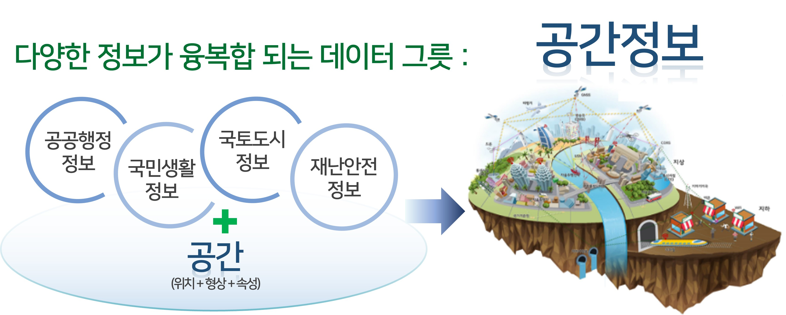
- 지상, 지하, 수상, 수중 등 공간 상에 존재하는 자연 또는 인공적인 객체에 대한 위치정보 및 이와 관련된 공간적 인지와 의사결정에 필요한 정보(공간정보산업 진흥법)
-
지리정보시스템(Geographic Information System, GIS)
- 공간적 문제를 해결하기 위해 다양한 공간자료를 수집, 구축, 유지, 관리, 편집하고 분석과 모델링을 통해 추출된 고부가가치의 정보를 표현하고 출력할 수 있게 고안된 종합적인 정보처리시스템

- 공간적 문제를 해결하기 위해 다양한 공간자료를 수집, 구축, 유지, 관리, 편집하고 분석과 모델링을 통해 추출된 고부가가치의 정보를 표현하고 출력할 수 있게 고안된 종합적인 정보처리시스템
-
어플리케이션별 GIS 분류
-
웹(Web) GIS
- 인터넷 기술과 GIS를 접목하여 공간정보의 입력, 수정, 조작, 출력 등 GIS 데이터와 서비스를 인터넷 환경에서 제공
-
모바일(Mobile) GIS
- 언제 어느 장소에서나 공간정보에 기반한 유무선 환경의 통신망을 통해 현재 위치 기반의 필요 정보를 제공할 수 있도록 구현된 GIS
-
엔터프라이즈(Enterprise) GIS
- 특정한 업무부서가 아닌 기업이나 기관 전체에서 필요로 하는 정보를 제공하는 것을 목적으로 지리정보를 효율적으로 관리, 분석, 활용하기 위한 GIS
-
2. 웹 GIS 개념 및 특징
-
웹 GIS 개념
-
인터넷을 통하여 단일 또는 다수의 기존 애플리케이션 시스템을 표준화된 기술로 결합시켜 모든 비즈니스를 가능하게 하는 웹 서비스를 기반으로 한 개념
-
인터넷을 통하여 공간데이터를 교환하고 전송할 뿐 아니라 검색, 분석, 처리할 수 있는 시스템
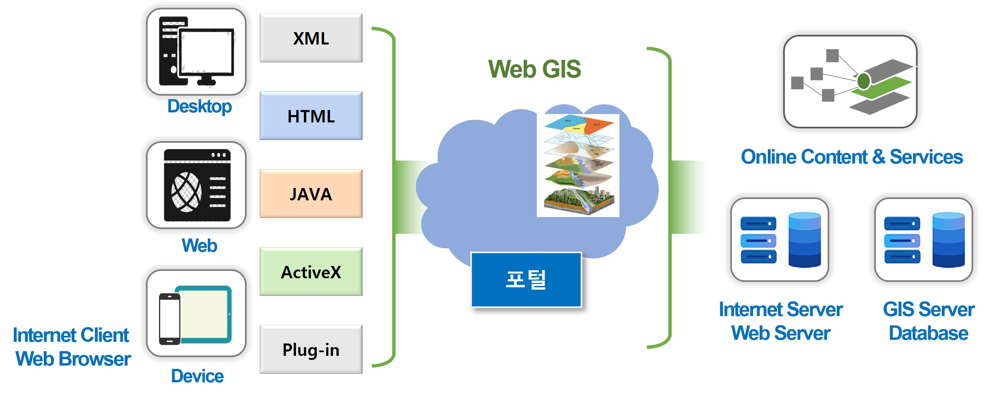
-
-
웹 GIS 특징
-
분산 환경
-
대용량을 처리해야 하는 GIS의 기능으로 인하여 분산 컴퓨팅 환경(Distributed Computing Environment, DCE)을 취함
-
인터넷으로 연결된 수많은 서버에 분산되어 있는 데이터와 기능의 객체를 사용자 요구에 따라 다양한 기능을 수행해야 함
-
-
대화형 시스템
-
인터넷에서 GIS 분석 기능을 수행하는 데 클라이언트 서버 개념을 응용
-
벡터를 따로 처리할 수 있는 클라이언트를 개발하고 이를 웹 상에 내재시켜 대화형 시스템을 구현
-
-
동적 유지 관리
- 분산 시스템으로써 데이터와 소프트웨어를 최신의 정보로 유지할 수 있음
-
통합 정보 제공
- 월드 와이드 웹은 웹 GIS에 비디오, 오디오, 지도, 텍스트, 방송 등의 다양한 형태의 자료를 동일한 웹 페이지로 통합할 수 있는 기능을 제공
-
다양한 사용자들과 협업 가능
-
다양한 유형의 지리정보 데이터를 서비스 및 데이터 형태인 단순화된 모델로 통합하여 플랫폼에 저장
-
이러한 공통된 모델을 통해 개인, 기관, 커뮤니티 등 모든 사용자를 연결하여 동일한 정보에 접근 가능
-
-
독립적 크로스 플랫폼(cross platform)
- 기종이나 운영체제에 독립적인 시스템으로 클라이언트의 하드웨어, 운영체제 및 관계형 데이터베이스 시스템의 종류에 관계없이 공통의 데이터와 기능을 공유할 수 있는 크로스 플랫폼을 지원
-
상호운용성(interoperability)
-
GIS 프로그램을 소유하지 않아도 웹상에서 GIS 프로그램을 구동하는 것과 같은 기능을 수행
-
데이터 포맷, 데이터 교환, 데이터 접근에 대한 표준 및 GIS 분석 컴포넌트의 표준 사양 등을 고려

-
-
3. 웹 서비스 표준
-
OSGeo(Open Source Geospatial Foundation)
-
지리공간기술과 데이터의 공개 협업 개발을 지원하고 알리기 위한 비영리, 비정부 단체
-
지리공간 분야의 오픈 소프트웨어와 오픈소스 개발을 폭넓게 재정적, 조직적, 법적으로 지원하기 위해 2006년 2월 4일 미국 시카고에서 창설

-
-
OGC(Open Geospatial Consortium) Standards
-
전 세계 530곳 이상 정부기관과 기업, 대학들이 참여하고 있는 세계 최대 공간정보산업 표준화 추진 기구
-
데이터 포맷에서부터 OGC Web Service에 이르는 다양한 표준 제정 및 인증
-
분기당 1회씩 매년 4회의 정기총회를 개최하고, 구성 멤버는 약 40% 이상이 기업
-
지역별 기관 수는 유럽이 208개, 북아메리카 182개, 아시아 86개, 중동 34개, 남아메리카 3개, 아프리카 3개 기관으로 구성

-
-
웹 서비스 표준
-
OGC와 월드 와이드 웹 컨소시엄(World Wide Web Consortium, W3C)의 주관으로 개발
- 웹 서비스 표준화 기구에서 진행되는 기반 기술의 표준화 작업을 바탕으로 하여 GIS와 관련되는 실질적인 기술 표준화는 OGC에서 추진
-
웹 서비스 기반의 GIS 표준 개발을 추진하여 실제 요구에 의하여 개발해 온 다양한 표준을 개념적으로 정리 및 통합
-
-
OGC의 대표적인 표준 서비스
-
WMS(Web Map Service)
- 공간 데이터베이스의 데이터를 지도 이미지로 서비스하기 위한 표준 프로토콜로 블록이나 선 같은 기본 지도(윤곽)를 표시
-
WFS(Web Feature Service)
-
플랫폼에 독립적인 호출을 이용하여 공간데이터에 대한 개체를 요청할 수 있는 인터페이스를 제공
-
WMS가 단순한 지도 이미지만을 서비스하는 데 반하여 WFS는 공간 분석 등과 같은 연산에 필요한 데이터를 서비스
-
-
WPS(Web Processing Service)
- 공간데이터에 대한 다양한 처리 서비스를 웹 상에서 정의하고 접근할 수 있도록 하기 위한 표준 프로토콜이며, 모든 OGC 표준 웹 서비스와 상호 호환성을 갖도록 함
-
WMTS(Web Map Tile Service)
-
정적인 이미지를 모아둔 저장소를 이용하여 매우 빠르게 지도 서비스를 수행하는 서비스
-
지도 이미지 저장소는 특정 축척별로 지도 영역을 타일 이미지로 저장한 디렉토리 구조
-
지도를 데이터베이스로부터 직접 생성하는 것보다 훨씬 시간 단축 가능
-
사용자가 복잡한 지도를 생성할 때 획기적으로 지도 생성 시간을 단축시키는 효과와 성능 향상을 위한 모든 노력 제거 가능
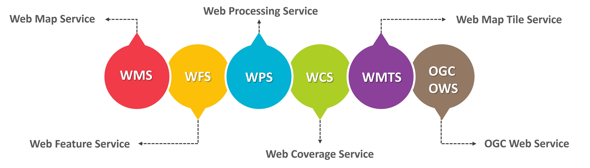
-
-
프로그래밍 개념
1. 개발자
-
개발자가 하는 일
-
컴퓨터가 처리할 수 있는 명령어로 코드(부호)를 작성하는 사람(코딩 또는 코더)을 지칭
- 소스코드는 컴퓨터가 어떤 명령을 내리기 위해 컴퓨터가 이해할 수 있는 언어로 작성한 정보
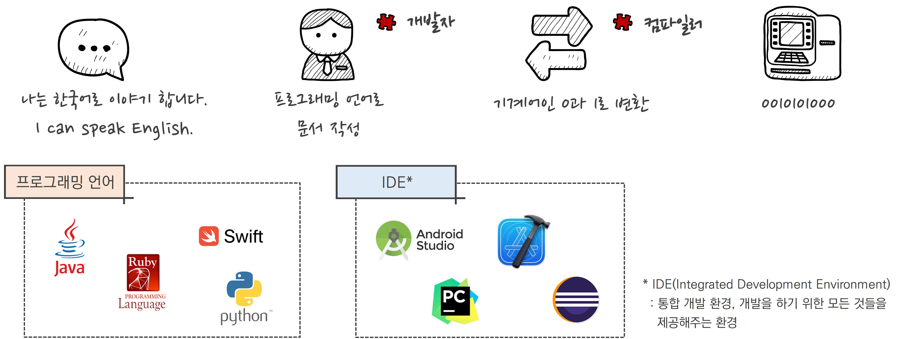
- 소스코드는 컴퓨터가 어떤 명령을 내리기 위해 컴퓨터가 이해할 수 있는 언어로 작성한 정보
-
프로그래밍은 컴퓨터에서 작동하는 프로그램을 설계하고 개발하는 전 과정을 의미
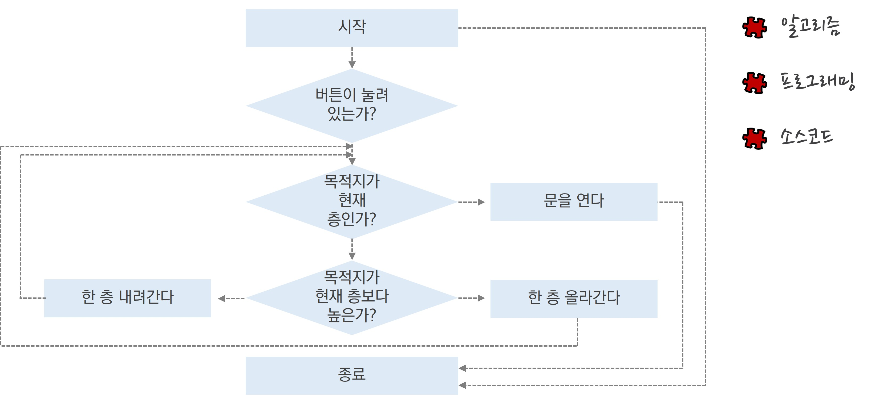
-
-
개발자가 만드는 것
- 소프트웨어 vs 프로그램 vs 애플리케이션
-
하드웨어: 눈에 보이고 만져지는 부분
-
소프트웨어: 보이지 않는 부분
-
라이브러리: 어떤 일을 수행하기 위해 필요한 기능을 일정 단위로 묶은 것
-
프로그램: 모든 과정을 수행할 수 있도록 만든 것
-
시스템 프로그램: 운영체제를 구성하는 소프트웨어
-
응용 프로그램: 각각의 목적에 따라 사용자가 실행하여 활용할 수 있는 프로그램
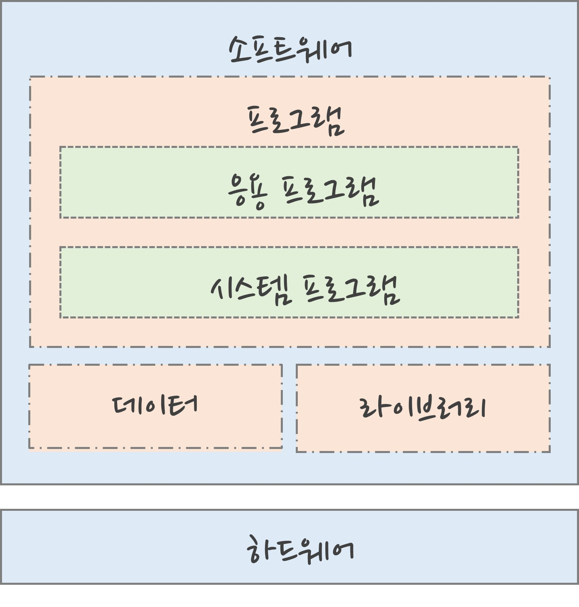
-
- 소프트웨어 vs 프로그램 vs 애플리케이션
2. 개발자의 종류
-
개발자의 종류
-
웹: 웹 사이트를 만드는 개발자
-
모바일: 손 안의 앱을 만드는 개발자
-
게임: 게임을 만드는 개발자
-
응용 소프트웨어: 컴퓨터 프로그램을 만드는 개발자
-
임베디드 개발자: 하드웨어를 제어하는 개발자
-
정보보안 전문가: 컴퓨터 시스템을 보호하는 개발자
-
AI 개발자: 기계를 가르치는 개발자
-
-
웹 개발자
- 웹 사이트를 개발하는 개발자로 웹 퍼블리셔, 프론트엔드 개발자, 백엔드 개발자로 구성

- 웹 사이트를 개발하는 개발자로 웹 퍼블리셔, 프론트엔드 개발자, 백엔드 개발자로 구성
-
웹 퍼블리셔
-
웹 사이트에서 보이는 부분을 담당하는 개발자로 해외에서는 보통 UI(User Interface) 개발자라 호칭
-
웹 사이트의 외적 요소를 코드로 구현하는 역할을 하고 HTML, CSS, JavaScript를 사용

-
-
프론트엔드 개발자(클라이언트 개발자)
-
사용자에게 보여줄 웹 사이트 화면을 만들고 사용자의 클릭이나 드래그와 같은 동작에 따라 웹 사이트의 다양한 기능이 실행되도록 프로그래밍
-
JavaScript를 중점적으로 사용하고, 이외 TypeScript, React 라이브러리 등을 사용
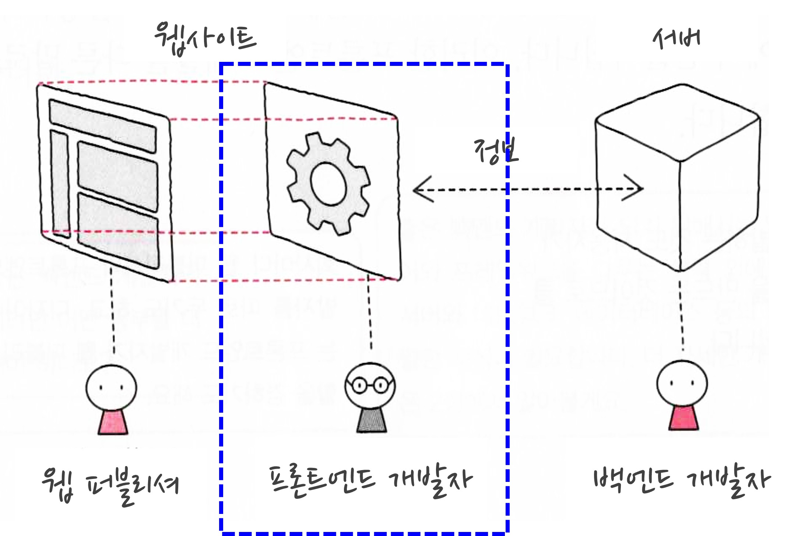
-
-
백엔드 개발자(서버 개발자)
-
웹 사이트에서 눈에 보이지 않는 요소를 개발하고 화면에 들어갈 데이터를 주고받는 서버의 기능 구현
-
JavaScript, Python, PHP, JAVA 등의 언어와 각 언어별 프레임워크(framework)를 사용
-
한국에서는 JAVA와 Spring 프레임워크 조합을 많이 사용

-
3. 프로그래밍 언어
-
개발된 배경
-
컴퓨터에 명령을 내린다는 목적으로 만들어진 언어
-
더 많은 사람이 읽기 편한 언어
-
짧은 코드로 더 많은 지시를 내릴 수 있는 언어
-
보다 빨리 작동하는 언어
-
오류로부터 안전한 언어
-
-
현재는 C, 자바(JAVA), 파이썬(Python), 자바스크립트(JavaScript) 등이 대표적
-
-
프로그래밍 언어의 구분
- 추상화에 수준에 따른 분류(하드웨어 친화도)
-
사람의 언어(자연어)에 가까울수록 고수준 언어
-
기계의 언어(0과 1)에 가까울수록 저수준 언어
-
어셈블리어(assembly language)는 기계어 한 줄 한 줄을 그대로 직역한 것으로 하나의 명령에 한 가지 작동

-
- 실행 방식에 따른 분류
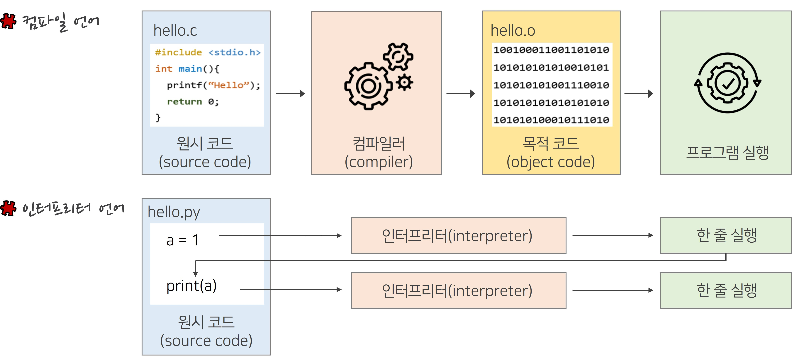
- 추상화에 수준에 따른 분류(하드웨어 친화도)
-
통합개발환경(IDE, Integrated Development Environment)
- 개발자들이 잘못된 코드를 작성하지 않도록 도와주는 프로그램
-
이클립스: 자바 프로그래밍에 많이 사용되는 도구
-
인텔리제이: 이클립스와 비슷한 용도로 사용되며, 더 강력한 기능을 가진 IDE
-
안드로이드 스튜디오: 인텔리제이의 안드로이드 개발용 버전으로 안드로이드 앱을 만드는데 사용
-
파이참: 파이썬 개발에 특화된 IDE
-
엑스코드: 애플이 개발한 IDE
-
비주얼 스튜디오: 마이크로 소프트웨어에서 제작한 IDE로 다양한 소프트웨어 개발
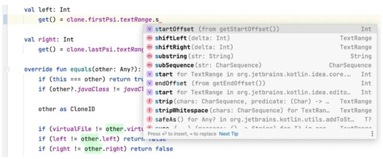
-
- 개발자들이 잘못된 코드를 작성하지 않도록 도와주는 프로그램
웹 서비스 구조
1. 웹 서비스의 개념
-
웹 서비스의 개념
- 웹은 서버(server)와 클라이언트(client)가 http(Hyper Text Transfer Protocol)를 통해 요청(request)과 응답(response)을 사용하여 자료를 주고받으며 정보를 교환
-
서버(server): 정보나 서비스를 저장하고 있다가 필요한 경우 네트워크를 이용해 사용자에게 전달해 주는 컴퓨터
-
클라이언트(client): 사용자가 원하는 정보를 서버 컴퓨터로부터 받아 오는 역할을 하는 컴퓨터

-
- 웹은 서버(server)와 클라이언트(client)가 http(Hyper Text Transfer Protocol)를 통해 요청(request)과 응답(response)을 사용하여 자료를 주고받으며 정보를 교환
2. 프로토콜의 개념
-
프로토콜(protocol)의 개념
-
서버에 요청할 때 지켜야할 약속, 통신 규약이라고 함

-
HTTP(HyperText Transfer Protocol)
-
통신 규약을 나타내는 것으로 네트워크로 이어진 두 컴퓨터가 어떤 종류의 소통을 할지 지정
-
클라이언트의 요청과 서버의 응답으로 구성된 방식
-
해당 웹 사이트가 신뢰할 만한 곳인지 확인하기 어려움
-
요청과 응답 사이에 아무런 보안장치 없이 데이터가 그대로 보내짐

-
-
HTTPS(HTTP Secure)
-
HTTP에 보안(secure) 기능을 더한 프로토콜로 주소 창에 자물쇠 표시가 나타남
-
클라이언트와 서버는 중요한 데이터를 보다 안전하게 주고받을 수 있음
-
웹사이트 노출이 HTTP보다 유리함(검색엔진 최적화)
-
-
3. 웹 문서의 개념
-
웹 문서의 개념
- 웹에서 클라이언트가 서버에 정보를 요청하면 응답하는 콘텐츠
-
주요 용어의 차이점
-
웹 페이지(web page): 웹 사이트의 일부인 단일 페이지를 의미하는 것으로 홈 페이지는 웹 페이지에 포함
-
웹 사이트(website): 여러 웹 페이지를 모아 놓은 꾸러미
-
홈페이지(homepage): 웹 사이트의 최상위 페이지를 뜻하며 일반적으로 웹 사이트를 방문한 사용자가 가장 먼저 보게 되는 페이지
-
-
웹 문서의 분류
-
정적 웹 페이지(static web page)
-
클라이언트가 웹 문서를 요청하면 웹 서버는 이미 만들어져 있는 문서(HTML, 이미지, JavaScript 파일 등)를 클라이언트에게 제공하는 웹 페이지
-
사용자는 서버에 저장된 데이터가 변경되지 않는 한 고정된 웹 페이지를 계속 보게 됨
-
모든 사용자는 같은 결과의 웹 페이지를 서버에 요청하고 응답
-
-
동적 웹 페이지(dynamic web page)
-
서버에 저장된 HTML 파일이 그대로 브라우저에 나오는 것이 아닌 동적으로 만들어지는 웹 페이지
-
요청 정보를 처리한 후에 제작된 HTML 문서를 클라이언트에게 전송하는 웹 페이지
-
요청에 관하여 사용자는 상황, 시간, 요청 등에 따라 다른 결과를 응답
-
같은 페이지라도 사용자마다 다른 결과의 웹 페이지를 서버에 요청하고 받을 수 있음
-
-
반응형 웹
- 페이지 내 요소들을 신축성 있게 만들어 기기나 화면 크기에 맞게 너비나 높이, 위치 등을 자동으로 조절하는 웹 사이트
-
적응형 웹
- 화면 크기에 따라 PC용과 모바일용 웹사이트를 따로 만드는 것
-
4. 웹 사이트 구성요소
-
웹 기술

-
HTML(HyperText Markup Language)
- 문서나 데이터의 구조를 표현하는 데 사용되는 언어
-
CSS(Cascading Style Sheets)
- 마크업 언어가 실제로 표시되는 방법을 기술하는 스타일 언어
-
JavaScript
- 웹 사이트에 각종 기능을 달아주는 프로그래밍 언어

- 웹 사이트에 각종 기능을 달아주는 프로그래밍 언어
-
-
웹 개발 품질 요소

-
웹 표준
-
브라우저 종류 및 버전에 따른 기능 차이에 대하여 호환이 가능하도록 제시된 표준
-
표준화 단체인 W3C(World Wide Consortium)가 권고한 표준안에 따라 웹 사이트를 작성할 때 사용하는 HTML, CSS, JavaScript 등에 대한 규정

-
-
웹 접근성
-
모든 사용자가 신체적, 환경적 조건에 관계 없이 웹에 접근하여 이용할 수 있도록 보장하는 것
-
한국형 웹 콘텐츠 접근성 지침(Web Content Accessibility Guidelines)
- 인식의 용이성(perceivable), 운용의 용이성(operable), 이해의 용이성(understandable), 내구성(robust)

- 인식의 용이성(perceivable), 운용의 용이성(operable), 이해의 용이성(understandable), 내구성(robust)
-
-
웹 호환성
- 운영체제, 브라우저에 상관없이 유사한 화면으로 동일한 정보에 접근이 가능해야 함

- 운영체제, 브라우저에 상관없이 유사한 화면으로 동일한 정보에 접근이 가능해야 함
-
HTML/CSS
실습 환경 구성
1. Visual Studio Code 개요
-
Visual Studio Code란?
- 마이크로소프트사에서 웹 개발을 위해 무료로 제공하는 편집기
-
Visual Studio Code 특징
-
대부분의 주요 플랫폼(윈도우, 맥OS, 리눅스)에서 모두 사용 가능
- 다양한 기능을 갖춘 대부분의 웹 편집기들은 윈도우나 메킨토시 등 특정 운영체제에서만 사용할 수 있고 유료인 경우가 많음
-
태그와 CSS 속성을 친절히 안내
- 입력하는 동안 태그나 CSS 속성에 대한 간단한 설명이 표시되고 ⓘ를 클릭하면 자세한 설명 보기 가능
-
태그와 CSS 속성을 간편하게 입력 가능
- 이름의 일부만 입력해도 그 단어가 포함된 목록이 표시되어 손쉽게 선택 가능하고, </까지만 입력하면 닫는 태그가 자동으로 추가
-
손쉽게 확장 가능
-
웹 개발을 할 때 확장이라는 기능을 통해 다양한 도구를 사용 가능하고 이를 통해 좀 더 작업이 쉬워짐
-
프로그램의 인터페이스를 한글 버전으로 바꿔주는 기능(Korean Language Pack), 수정한 소스를 즉시 웹 브라우저에서 결과를 확인할 수 있는 기능(Live Server) 등
-
마켓플레이스(https://marketplace.visualstudio.com/vscode)를 이용하면 C#을 비롯해 파이썬, Go, AngularJS 등 최신 웹 기술들을 비주얼 스튜디오 코드 안에 통합해 사용 가능
-
-
2. Visual Studio Code 설치 및 환경설정
-
Visual Studio Code 설치
-
Visual Studio Code 홈페이지로 접속한 후 Download for Windows 버튼을 클릭
- https://code.visualstudio.com
-
라이선스 동의 후 설치 폴더를 선택하고, 다음 버튼을 클릭

-
시작 메뉴 폴더 및 추가 작업을 선택하고, 여기서 기타에 표시된 항목은 반드시 체크
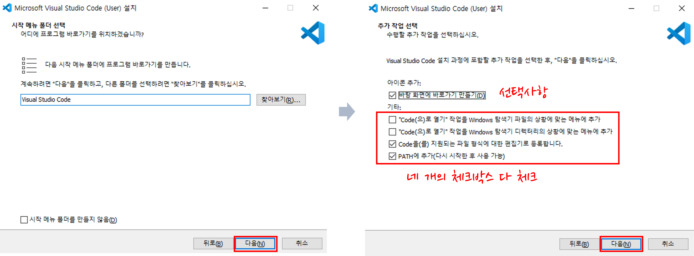
-
설치가 완료되면 프로그램 실행
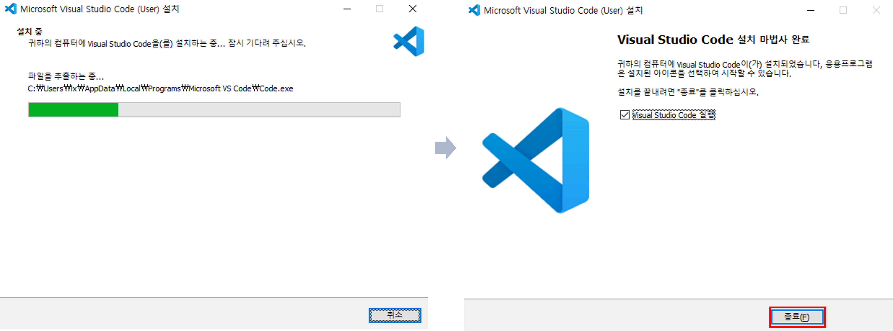
-
-
Visual Studio Code 환경 설정
-
Korean Language Pack for Visual Studio Code 설치
- 기본 언어를 한글로 바꾸기 위해 확장 아이콘을 클릭하고, 검색 창에 Korean language를 입력하고 검색 결과를 선택하여 [Install] 또는 [설치] 버튼을 클릭(재 시작해야 함)

- 기본 언어를 한글로 바꾸기 위해 확장 아이콘을 클릭하고, 검색 창에 Korean language를 입력하고 검색 결과를 선택하여 [Install] 또는 [설치] 버튼을 클릭(재 시작해야 함)
-
라이브 서버(Live Server) 확장 설치
- 확장 아이콘을 클릭하고, 검색 창에 Live Server를 입력한 후 목록에서 제작자가 Ritwick Dey인 확장을 선택하여 [Install] 또는 [설치] 버튼을 클릭

- 확장 아이콘을 클릭하고, 검색 창에 Live Server를 입력한 후 목록에서 제작자가 Ritwick Dey인 확장을 선택하여 [Install] 또는 [설치] 버튼을 클릭
-
인터페이스 설정
-
설정 > 테마에서 인터페이스의 색 테마, 파일 아이콘 테마, 제품 아이콘 테마 설정
-
Font Size, Mouse Wheel Zoom, Word Wrap, Tab Size 등을 검색하여 항목 설정

-
-
-
실습을 위한 작업 폴더 추가
-
소스가 있는 폴더를 ’작업 폴더’로 지정하면, 웹 문서에서 사용하는 여러 파일들을 한 눈에 확인하고 관리 가능
-
폴더 열기 버튼 또는 상단 메뉴에서 파일 > 폴더 열기를 선택한 후 실습 폴더 선택
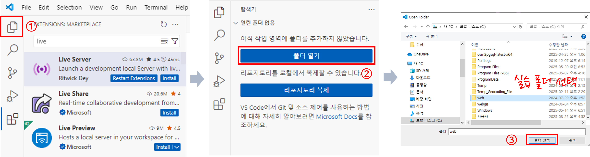
-
HTML 기본 개념 및 주요 태그
1. HTML 개념
-
웹 사이트에서 사용할 문서는 웹에 맞는 형식인 html 확장자를 붙여 다른 문서와 구분
-
HTML은 HyperText Markup Language의 줄임말로 웹에서 자유롭게 오갈 수 있는 웹 문서를 만드는 언어

2. HTML 문서 생성
-
Visual Studio Code에서 파일 > 새 파일을 클릭하고, new.html을 입력 후 팝업 되는 창에서 저장 위치 선택

-
new.html이라는 탭이 생성되면 !(느낌표)를 입력하고 Tab 키를 클릭
- 비주얼 스튜디오 코드에서는 웹 문서의 태그를 자동으로 입력해 주는 이멧(Emmet) 기능 존재

- 비주얼 스튜디오 코드에서는 웹 문서의 태그를 자동으로 입력해 주는 이멧(Emmet) 기능 존재
3. HTML 문서 구조
-
어떤 웹 문서를 작성하든 이 기본 구조를 지켜야 함
- 웹 브라우저에 표시되는 웹 문서 내용은
<body>태그와</body>태그 사이에 입력

- 웹 브라우저에 표시되는 웹 문서 내용은
-
Ctrl + S를 눌러 문서를 저장하고, 코드 창에서 마우스 오른쪽 클릭하여 Open With Liver Server 클릭
-
윈도우 탐색기에서 new.html을 더블클릭해서 실행해도 됨
-
웹 브라우저에서 127.0.0.1:5500/new.html을 입력하면 코드 수정 시 자동 반영

-
-
웹에서 특수 문자 및 특수 기호를 표시할 때는 미리 약속한 이름이나 표기법을 사용
-
이 표기법을 ‘엔티티(entity) 이름’ 또는 ‘엔티티 기호’라고 함
-
W3C(https://www.w3.org/MarkUp/html3/latin1/html)에서 제공하는 엔티티 코드 표에서 확인

-
4. HTML의 태그(tag) 사용법
-
태그는 <와 >를 이용해 구분
- 웹 브라우저는 <와 > 사이에 있는 문자를 태그로 인식
-
태그와 태그 안에 사용하는 속성들은 모두 소문자로 사용
- 맞는 예:
<img src = "images/first.jpg"> - 틀린 예:
<IMG src = "images/first.jpg">
- 맞는 예:
-
여는 태그와 닫는 태그를 정확하게 입력
- 맞는 예:
<h1> 시간이란 </h1> - 틀린 예:
<h1> 시간이란
- 맞는 예:
-
[Tab] 키를 이용해서 적당히 들여쓰기
- 들여쓰기의 예
<ul>
<li> 메뉴 1 </li>
<li> 메뉴 2 </li>
</ul>
- 들여쓰기의 예
-
태그는 여러 기능을 추가하는 속성과도 함께 사용
- <태그 속성 = “속성 값” 속성 = “속성 값” …> 형태로 사용
- 예:
<img src = "image/first.jpg" width="350" height="200" alt="시계이미지">
-
한 태그 안에 다른 태그를 포함시킬 때, 여는 태그와 닫는 태그 쌍을 정확히 맞추어 사용
- 예:
<u> 한국국토정보공사 <i>국토정보교육원</i></u>
- 예:
5. 제목과 문단 태그

| 태그 | 설명 | 태그 | 설명 |
|---|---|---|---|
<p> | 텍스트 단락 생성 | <br> | 줄 바꿈 |
<hr> | 가로 줄(수평 줄) 생성 | | 공백(스페이스) 삽입 |
6. 글자 태그
| 태그 | 설명 | 태그 | 설명 |
|---|---|---|---|
<b> | 굵게 표시하기(구 버전 HTML) | <strong> | 중요한 내용임을 명시 |
<i> | 글자를 기울임(구 버전 HTML) | <em> | 강조할 내용임을 명시 |
<sup> | 위 첨자 | <sub> | 아래 첨자 |
<mark> | 형광펜 효과 내기 |
-
제목과 글자 태그 활용 실습
- 아래에 있는 LX국토정보교육원 소개 정보를 사용해서 다음 그림과 같이 웹 문서를 작성해 봅시다!

LX국토정보교육원 소개(클릭)
LX 국토정보교육원 국토정보교육원은 공간정보 공간정보처리및분석, 프로젝트, 플랫폼 분야 드론, 지적측량 등 디지털 혁신을 선도하는 국내 유일의 국토정보 전문 교육훈련기관입니다. 수요자 중심의 교육훈련체계 혁신을 바탕으로 대한민국 국토정보 발전의 거점이자 미래형 국토정보 혁신인재를 양성하는 전당이 되도록 최선의 노력을 다하겠습니다.정답 코드 보기/숨기기(클릭)
<h1>LX 국토정보교육원</h1> <b>국토정보교육원</b>은 공간정보 <sup>공간정보처리및분석, 프로젝트, 플랫폼 분야</sup> 드론, 지적측량 등 디지털 혁신을 선도하는 <mark>국내 유일의 국토정보 전문 교육훈련기관</mark>입니다. <br><hr><sub>수요자 중심의 교육훈련체계 혁신을 바탕으로</sub> 대한민국 국토정보 발전의 거점이자 <i><b>미래형 국토정보 혁신 인재를 양성</b></i>하는 전당이 되도록 최선의 노력을 다하겠습니다. - 아래에 있는 LX국토정보교육원 소개 정보를 사용해서 다음 그림과 같이 웹 문서를 작성해 봅시다!
7. 목록 태그

| 태그 | 설명 |
|---|---|
<ol> | 순서가 필요한 목록을 만드는 태그(Ordered List) |
<ul> | 순서가 필요하지 않은 목록을 만드는 태그(Unordered List) |
<li> | ol이나 ul 태그 안의 각 항목(List Item) |
<dl> | 설명 목록을 만드는 태그(Description List) |
<dt> | 설명 목록의 제목(Description Term) |
<dd> | 설명 목록의 내용(Description Detailes) |
-
목록 태그 활용 실습
-
아래에 있는 직무전문분야 소개 정보를 다음 그림과 같이 웹 문서를 작성해 봅시다!
(단, 직무전문분야는 3단계 제목 태그 사용 )

직무전문분야 소개(클릭)
직무전문분야 지적측량 융복합(공간정보+지적) 공간정보정답 코드 보기/숨기기(클릭)
<h3>직무전문분야</h3> <ol> <li>지적측량</li> <li>융복합(공간정보+지적)</li> <li>공간정보</li> </ol> <ul> <li>지적측량</li> <li>융복합(공간정보+지적)</li> <li>공간정보</li> </ul> -
아래에 있는 지적재조사 정보를 사용해서 다음 그림과 같이 웹 문서를 작성해 봅시다!
(단, 지적재조사의 필요성, 기대효과는 3단계 제목 태그 사용 )

지적재조사 정보(클릭)
지적재조사의 필요성 훼손되고 부정확한 종이지적도 국토의 약 15%가 지적도와 불일치 일본 동경을 기준으로 하는 대한민국 지적도 기대효과 디지털 지적을 통한 국민 재산권 보호 지표, 지상, 지하의 정보를 디지털 지적에 등록함으로써 국민의 재산권 보호 실현 대국민 지적행정 서비스의 질적 향상 중복정보 및 불일치 정보 정정으로 정확한 토지정보 제공 건축 및 개발 등에 필요한 행정적 절차의 간소화정답 코드 보기/숨기기(클릭)
<h3>지적재조사의 필요성</h3> <ul> <li><b>훼손되고 부정확</b>한 종이지적도</li> <li>국토의 약 15%가 지적도와 <b>불일치</b></li> <li><b>일본 동경을 기준</b>으로 하는 대한민국 지적도</li> </ul> <h3>기대효과</h3> <ul> <li>디지털 지적을 통한 국민 재산권 보호</li> <ol> <li>지표, 지상, 지하의 정보를 디지털 지적에 등록함으로써 국민의 재산권 보호 실현</li> </ol> <li>대국민 지적행정 서비스의 질적 향상</li> <ol> <li>중복정보 및 불일치 정보 정정으로 정확한 토지정보 제공</li> <li>건축 및 개발 등에 필요한 행정적 절차의 간소화</li> </ol> </ul>
-
8. 이미지 태그
-
웹 문서에 이미지를 삽입할 때는
<img>태그를 사용- 현재 html 문서 위치가 경로 기준이 되고 한 단계 위로는 ‘..’ 기호를 사용

속성 설명 예시 src 이미지의 원본 파일 경로 <img src="lx.png">alt 이미지를 설명해 주는
대체 텍스트<img src="lx.png" alt="국토정보공사">width, height 이미지 크기 조정 <img src = "lx.png"width="250" height="250"> - 현재 html 문서 위치가 경로 기준이 되고 한 단계 위로는 ‘..’ 기호를 사용
-
이미지 태그 활용 실습
- 국토정보교육원 홈페이지에서 로고를 이미지(lxcti.png)로 저장하고 이미지 태그를 사용해 봅시다.
정답 코드 보기/숨기기(클릭)
<img src="lxcti.png"> - 국토정보교육원 홈페이지에서 로고를 이미지(lxcti.png)로 저장하고 이미지 태그를 사용해 봅시다.
9. 링크 태그
-
<a>태그를 사용해서 하이퍼링크(hyperlink)를 만들 수 있고, 텍스트 또는 이미지와 함께 사용- 기본적으로 href 속성을 이용해 주소를 지정해야 함

- 기본적으로 href 속성을 이용해 주소를 지정해야 함
-
target 속성을 사용하면 현재 화면 뿐만 아니라 새로운 화면에서도 링크를 열 수 있음
-
_self: target 속성의 기본 값으로 링크가 있는 화면에서 열림
-
_blank: 링크 내용이 새 창이나 새 탭에서 열림
-
-
링크 태그 활용 실습
-
LX국토정보교육원 글자와 로고 이미지를 삽입하고 링크 태그를 사용하여 홈페이지로 이동하도록 웹 문서를 작성해 봅시다!
(단, 국토정보교육원 글자는 제목태그 3단계 사용, 링크를 클릭하면 새창에서 열리도록 지정)정답 코드 보기/숨기기(클릭)
<a href="http://lxcti.or.kr" target = "_blank"><h3>LX국토정보교육원</h3></a><br> <a href="http://lxcti.or.kr" target = "_blank"><img src="lxcti.png" alt="국토정보교육원"></a>
-
10. 표 태그
-
표를 생성하기 위해서는
<table>,<tr>,<td>,<th>태그를 사용-
<table>태그를 이용해 표 전체 윤곽을 잡은 후 행이 2개이고 열이 3개인 표를 생성
-
열을 합칠 때는 colspan, 행을 합칠 때는 rowspan 속성을 이용해 합칠 셀의 개수를 지정하면 됨

-
-
표 태그 활용 실습
-
위에 있는 표를 웹 문서로 작성해 봅시다!
(단, 테이블에 지정된 서식(선 색상, 선 굵기, 음영 색상, 정렬 등)은 무시!)정답 코드 보기/숨기기(클릭)
<table border = "1"> <tr> <td>방이름</td> <td>대상</td> <td>크기</td> <td>가격</td> </tr> <tr> <td>유채방</td> <td>여성 도미토리</td> <td>2인실</td> <td rowspan="3">1인 20,000원</td> </tr> <tr> <td rowspan="2">동백방</td> <td>동성 도미토리</td> <td>2인실</td> </tr> <tr> <td>가족 1팀</td> <td>4인실</td> </tr> <tr> <td colspan="4">바깥채 전체를 렌트합니다.</td> </tr> </table> -
아래에 있는 표를 웹 문서로 작성해 봅시다!
(단, 테이블에 지정된 서식(선 색상, 선 굵기, 음영 색상, 정렬 등)은 무시!)

정답 코드 보기/숨기기(클릭)
<table border = "1"> <tr> <th></th> <th>GeoAI</th> <th>데이터 분석</th> <th>플랫폼 개발/운영</th> </tr> <tr> <th rowspan="3">전문</th> <td colspan="3">프로젝트 관리</td> </tr> <tr> <td>인공지능 분석과 활용</td> <td>국토정보분석</td> <td>공간정보 웹 서비스 개발</td> </tr> <tr> <td></td> <td>국토정보프로그래밍</td> <td>3차원 공간정보 서비스 구현</td> </tr> <tr> <th rowspan="4">기본</th> <td colspan="3">공간정보 플랫폼 기술 융합</td> </tr> <tr> <td colspan="2">파이썬 기초 및 활용</td> <td>3D 그래픽 기본</td> </tr> <tr> <td>노코드 기반 GeoAI 이해와 활용</td> <td>국토정보처리융합</td> <td>공간정보 DB기본</td> </tr> <tr> <td></td> <td></td> <td>웹 프로그래밍 기본</td> <tr> <th>공통</th> <td>GIS TOOL 운용</td> <td>인공지능 이해와 활용</td> <td>데이터와 논리적 사고</td> </tr> </table>
-
11. 폼 만들기
-
폼(form) 태그
-
폼(form)은 사용자가 웹 사이트로 정보를 보낼 수 있는 요소
-
<form>과</form>태그 사이에 여러 폼 요소와 관련된 태그를 삽입- 예: 아이디와 비밀번호 입력창, 로그인 버튼, 회원가입 창 등

- 예: 아이디와 비밀번호 입력창, 로그인 버튼, 회원가입 창 등
-
-
폼 태그의 사용
-
<label>태그: 폼 요소에 레이블을 붙이기 위해 사용 -
<textarea>태그: 여러 줄로 된 텍스트 입력 필드를 나타내는 태그(cols, rows로 길이 설정) -
<input>태그: 사용자가 내용을 입력하는 부분을 생성하기 위해 사용-
id 속성: 여러 번 사용된 폼 요소를 구분하기 위해 사용
-
type 속성: 사용자가 입력할 수 있는 형태를 지정하기 위해 사용
(예: 라디오 버튼, 체크박스, 텍스트 상자 등)
-
-
-
<input>태그의 type 속성에서 사용 가능한 유형-
name 속성: 서버에서 폼 요소를 구분하기 위해 이름 지정
-
value 속성: 선택한 라디오버튼이나 체크 박스를 서버로 알려줄 때 넘길 값을 지정
- button에서 value 속성은 버튼에 표시할 내용 지정
- button에서 value 속성은 버튼에 표시할 내용 지정
유형 설명 text 한 줄 짜리 텍스트를 입력할 수 있는 텍스트 상자 삽입 radio 주어진 항목에서 1개만 선택할 수 있는 radio 버튼 삽입 checkbox 주어진 항목에서 2개 이상 선택 가능한 체크박스 삽입 button 버튼 삽입 -
-
<input>태그의 다양한 속성유형 설명 autofocus 입력 커서 표시하기 placeholder 힌트를 쌍따옴표 안에 표시하기 -
폼 태그 활용 실습
-
아래와 같이 폼 태그를 작성해 봅시다!
(단, 직원정보는 제목 태그의 3단계로 작성)

정답 코드 보기/숨기기(클릭)
<form> <h3>직원 정보</h3> <label for="name">이 름 <input type="text", id="name" autofocus placeholder="띄어쓰기 없이 입력하세요"></label><br> <label for="phone">휴대폰 <input type="phone", id="phone"> </label><br> <label for="email">이메일 <input type="email", id="email"></label><br><br> <input type="button", value="등록하기"></label> </form> -
아래와 같이 폼 태그를 작성해 봅시다!
(단, 질문은 제목 태그의 4단계로 작성)

정답 코드 보기/숨기기(클릭)
<p>여러분들의 의견을 들려주세요!</p> <hr> <form> <h4>개인정보</h4> <ul> <li> <label for="name"> 이름 </label> <input type="text" name="info" id="name" autofocus placeholder="공백없이 입력하세요"> </li> <li> <label for="belong"> 소속 </label> <input type="text" name="info" id="belong"> </li> </ul> <h4>가장 유익한 과목은?</h4> <ul> <li> <label for="sub1"> <input type="radio" name="subject" id="sub1"> HTML</label> </li> <li> <label for="sub2"> <input type="radio" name="subject" id="sub2"> CSS</label> </li> <li> <label for="sub3"> <input type="radio" name="subject" id="sub3"> JavaScript</label> </li> </ul> <h4>강의시간이 더 필요한 과목은?</h4> <ul> <li> <label for="sub4"> <input type="checkbox" name="time" id="sub4"> HTML</label> </li> <li> <label for="sub5"> <input type="checkbox" name="time" id="sub5"> CSS</label> </li> <li> <label for="sub6"> <input type="checkbox" name="time" id="sub6"> JavaScript</label> </li> </ul> <h4>건의사항</h4> <label for="feedback"> <textarea id="feedback" name="feedback" cols="60" rows="5" placeholder="수정 및 개선사항을 간략하게 써 주세요."></textarea> </label><br> <input type="button" value="등록하기"> </form>
-
CSS 기초
1. CSS 개념
-
Cascading Style Sheets의 약어로 텍스트 색상이나 크기, 이미지 크기나 위치, 표 색상, 배치 방법 등 웹 문서의 디자인 요소를 담당
-
CSS Zen Garden(http://csszengarden.com) 사이트 접속해서 확인
-
스타일 형식은 선택자 다음에 중괄호({})가 오고 그 사이에 속성을 입력
- 중괄호 안에 들어가는 속성과 속성 값은 콜론(:), 속성과 속성 값 쌍 다음에는 세미콜론(;)으로 구분

스타일 형식 보기(클릭)
p{ color : blue; font-size: 16px; } h2{ font-size: 20px; color: orange; }정답 보기/숨기기(클릭)
텍스트 단락의 글자 색을 파란색, 글자 크기를 16px로 지정
2단계 제목의 글자 크기를 20px, 글자 색상을 오렌지로 지정 - 중괄호 안에 들어가는 속성과 속성 값은 콜론(:), 속성과 속성 값 쌍 다음에는 세미콜론(;)으로 구분
2. 스타일 시트
-
스타일 규칙들을 한 눈에 확인하고 필요할 때마다 수정하기 쉽도록 한 군데 묶어 놓은 것
-
인라인 스타일
- 스타일 시트를 사용하지 않고 스타일을 적용할 대상에 직접 표시
-
내부 스타일 시트
- 웹 문서 안에서 사용할 스타일을
<head>태그 안에서 정의하고,<style>태그 사이에 작성
- 웹 문서 안에서 사용할 스타일을
-
외부 스타일 시트
- 웹 문서에서 사용할 스타일을 별도 파일로 저장(*.css)해 놓고
<link>태그로 연결

- 웹 문서에서 사용할 스타일을 별도 파일로 저장(*.css)해 놓고
HTML 코드 보기/숨기기(클릭)
<h1>LX국토정보공사</h1> <h2>국토정보교육원</h2>CSS 코드 보기/숨기기(클릭)
<h1 style = "font-family:궁서";>LX국토정보공사</h1> <style> h1{font-family:궁서;} </style> <link rel = "stylesheet" href = "html_01.css"> h1{font-family:궁서;} -
3. 주요 선택자
-
스타일 속성을 적용하는 요소인 선택자는 태그 하나가 될 수도 있지만 여러 개의 요소를 묶어 별도의 선택자로 지정 가능
-
전체 선택자
- 주로 모든 요소에 한꺼번에 스타일을 적용할 때 사용하는 것으로 *(별표)를 사용

- 주로 모든 요소에 한꺼번에 스타일을 적용할 때 사용하는 것으로 *(별표)를 사용
-
태그 선택자
- 특정 태그가 쓰인 모든 요소에 스타일 적용

- 특정 태그가 쓰인 모든 요소에 스타일 적용
-
그룹 선택자
- 둘 이상 요소에 같은 스타일을 적용할 때 사용하는 것으로 쉼표(,)로 구분해 여러 선택자를 나열한 후 스타일을 정의

- 둘 이상 요소에 같은 스타일을 적용할 때 사용하는 것으로 쉼표(,)로 구분해 여러 선택자를 나열한 후 스타일을 정의
-
클래스 선택자(여러 번 적용 가능)
- 특정 부분에만 스타일을 적용할 때 사용하는 것으로 태그 대신 클래스 이름을 사용하고 클래스 이름 앞에 마침표(.)를 붙임(대부분 여러 요소에 같은 스타일)

- 특정 부분에만 스타일을 적용할 때 사용하는 것으로 태그 대신 클래스 이름을 사용하고 클래스 이름 앞에 마침표(.)를 붙임(대부분 여러 요소에 같은 스타일)
-
id 선택자(한 번만 적용 가능)
- 클래스 선택자와 마찬가지로 특정 부분에 스타일을 지정할 때 사용하는데 마침표(.) 대신 # 기호를 사용(페이지에서 딱 하나만 존재하는 요소)

- 클래스 선택자와 마찬가지로 특정 부분에 스타일을 지정할 때 사용하는데 마침표(.) 대신 # 기호를 사용(페이지에서 딱 하나만 존재하는 요소)
HTML 코드 보기/숨기기(클릭)
<h1>LX국토정보공사</h1> <h2>LX국토정보교육원</h2> <h2 class = "lx">LX국토정보교육원</h2> <h2 id = "lx">LX국토정보교육원</h2>CSS 코드 보기/숨기기(클릭)
*{ font-family: 궁서; } h2{ font-family: 궁서; } h1, h2{ font-family: 궁서; } .lx{ font-family: 돋움; } #lx{ font-family: 돋움; } -
4. 텍스트 관련 스타일
-
font-family 속성
-
웹 문서에 사용할 글꼴 지정하기

-
웹 폰트(web font) 사용하기
-
웹 문서를 작성할 때 웹 문서 안에 글꼴 정보도 함께 저장했다가 사용자가 웹 문서에 접속하면 글꼴을 사용자 시스템으로 다운로드 시키는 방식을 사용
-
구글 웹 폰트(https://fonts.google.com) 사용하는 방법

HTML 코드 보기/숨기기(클릭)
<!-- Gamja-flower 폰트 embed code in the <head> of your html 부분 붙여넣기 --> <link rel="preconnect" href="https://fonts.googleapis.com"> <link rel="preconnect" href="https://fonts.gstatic.com" crossorigin> <link href="https://fonts.googleapis.com/css2?family=Gamja+Flower&display=swap" rel="stylesheet">CSS 코드 보기/숨기기(클릭)
/* Gamja Flower:CSS class 부분 붙여넣기 */ .gamja-flower-regular { font-family: "Gamja Flower", sans-serif; font-weight: 400; font-style: normal; } *{ font-family:"Gamja Flower"; } -
-
-
font-size 속성
-
글자 크기를 조절하는 것으로 주로 크기 값을 직접 지정하는 방법을 사용
-
크기를 지정할 때 사용할 수 있는 단위는 em, ex, px, pt가 있고 주로 px 단위를 사용
단위 설명 em 대문자 M 발음, 해당 글꼴의 대문자 M의 너비를 기준으로 크기를 조절 ex x-height, 해당 글꼴의 소문자 x의 높이를 기준으로 크기를 조절 px pixel, 모니터에 따른 상대적 크기 pt point, 일반 문서에 많이 사용하는 단위
CSS 코드 보기/숨기기(클릭)
/* 전체 선택자 스타일 수정, 태그 선택자 스타일 삽입 */ *{ font-family:"Gamja Flower"; font-size: 15px; } p{ font-size: 30px; } h4{ font-size: 20px; } -
-
color 속성
- 글자 색을 지정하는 속성으로 색상 값은 16진수나 rgb(또는 rgba), hsl(또는 hsla), 색상 이름으로 표시
-
16진수: RRGGBB와 같이 표기하고 f가 제일 큰 수치이고, 0이 제일 작은 수치
-
rgb: 0 ~ 255 사이의 숫자로 표기하고 값이 클수록 색상 표현이 큼
-
hsl: 색상(hue) 각도를 기준으로 색상을 둥글게 배치한 색상환으로 표시, 채도(saturation)와 밝기(lightness)는 %로 표시
-
알파(a): 0 ~ 1 사이의 숫자로 표기하고 0에 가까울수록 투명, 1에 가까울수록 불투명
-
- Color Picker(http://www.colorpicker.com)로 원하는 색상을 추출

CSS 코드 보기/숨기기(클릭)
/* color 속성 연습 후 삭제, 실습에서는 16진수 사용 */ /* p{ color: #ff0000; f00으로도 사용 color: rgba(255, 0, 0, 1.0); color: red; } */ /* 태그 선택자 스타일 삽입 */ p{ font-size: 30px; color: #1866aa; } h4{ font-size: 20px; color: #1866aa; } - 글자 색을 지정하는 속성으로 색상 값은 16진수나 rgb(또는 rgba), hsl(또는 hsla), 색상 이름으로 표시
5. 문단 스타일
-
text-align 속성
- 문단의 텍스를 정렬하는 속성으로 워드나 한글문서에서 흔히 사용하던 정렬방식 사용 가능

속성 설명 left 왼쪽에 맞추어 문단을 정렬 right 오른쪽에 맞추어 문단을 정렬 center 가운데에 맞추어 문단을 정렬 justify 양쪽에 맞추어 문단을 정렬 - 문단의 텍스를 정렬하는 속성으로 워드나 한글문서에서 흔히 사용하던 정렬방식 사용 가능
6. 목록 스타일
-
list-style-type 속성
- 순서 없는 목록의 경우 목록 앞에 다양한 불릿(bullet)을 삽입할 수 있고, 순서 목록에서는 번호 스타일을 지정 가능

속성 설명 속성 설명 disc 채운 원(●) decimal 숫자(1, 2, 3) circle 빈 원(○) decimal-leading-zero 숫자(01, 02, 03) square 채운 사각형(■) lower-alpha 영문 소문자(a, b, c) none 불릿 없애기 upper-alpha 영문 대문자(A, B, C) lower-roman 로마자 소문자(ⅰ, ⅱ, ⅲ) upper-roman 로마자 대문자(Ⅰ, Ⅱ, Ⅲ)
CSS 코드 보기/숨기기(클릭)
/* list-style-type 속성 연습 후 삭제, 실습에서는 none 사용 */ li{ list-style-type: circle; list-style-type: square; list-style-type: none; } - 순서 없는 목록의 경우 목록 앞에 다양한 불릿(bullet)을 삽입할 수 있고, 순서 목록에서는 번호 스타일을 지정 가능
7. 배경 색
-
background-color 속성
- 배경 색을 지정하는 속성으로 색상 값은 color 속성과 동일한 방법으로 적용

HTML 코드 보기/숨기기(클릭)
<!-- html의 name, belong, textarea에 class 삽입 --> <input type="text" name="info" id="name" class="name" autofocus placeholder="공백없이 입력하세요"> <input type="text" name="info" id="belong" class="belong"> <textarea class="text" id="feedback" name="feedback" cols="60" rows="5" placeholder="수정 및 개선사항을 간략하게 써 주세요.">CSS 코드 보기/숨기기(클릭)
/* text, textarea에 배경 색 추가 */ .name{ background-color: #e8f3fd; } .belong{ background-color: #e8f3fd; } .text{ background-color: #e8f3fd; } - 배경 색을 지정하는 속성으로 색상 값은 color 속성과 동일한 방법으로 적용
JavaScript
자바스크립트 이해
1. 프런트앤드 개발 이해하기
-
1단계
- 고객(클라이언트)에게 개발을 의뢰를 받으면 고객의 요구에 맞게 기획안을 작성
-
2단계
- 기획안을 토대로 디자이너가 화면에 보여질 UI(User Interface)를 디자인
-
3단계
- 프런트엔드 개발 단계로 HTML, CSS, JavaScript, JQuery 등을 이용해 사용자(사이트 방문자)의 눈에 보이는 부분을 개발
-
4단계
- 백엔드 개발자는 3단계 결과를 ASP, PHP, JSP 등 서버 언어를 이용하여 화면에 보이지 않는 부분을 개발
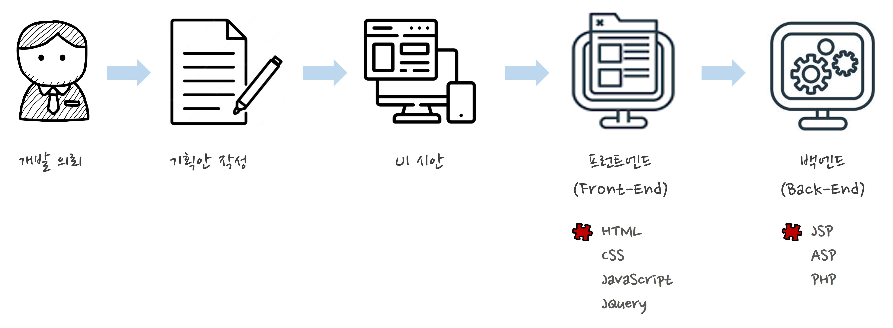
- 백엔드 개발자는 3단계 결과를 ASP, PHP, JSP 등 서버 언어를 이용하여 화면에 보이지 않는 부분을 개발
2. 자바스크립트의 이해
-
자바스크립트는 프런트엔드 개발 언어이며 정적인 웹 문서에 동작을 부여
- 웹 페이지에 생동감을 불어넣기 위해 만들어진 프로그래밍 언어
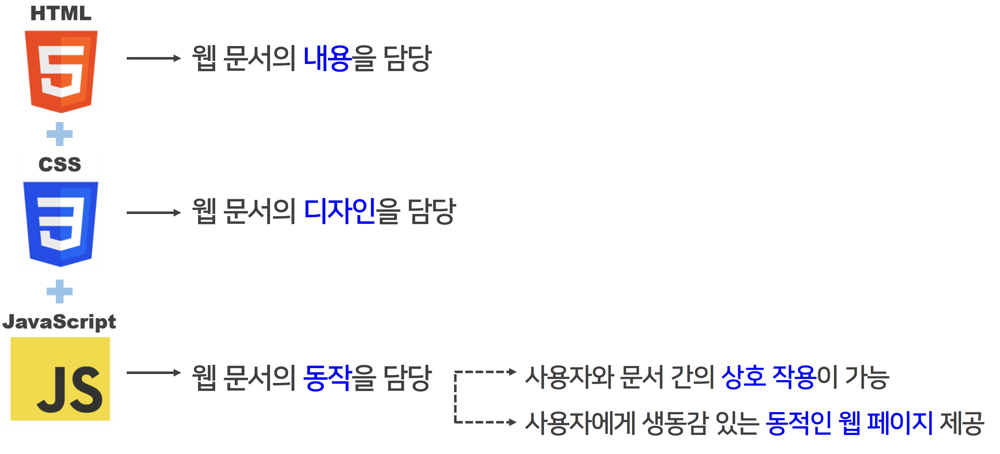
- 웹 페이지에 생동감을 불어넣기 위해 만들어진 프로그래밍 언어
-
자바스크립트 탄생 배경
-
브라우저에서 동작하는 언어인 자바스크립트는 1995년 세계 최초의 상용 브라우저인 넷스케이프 내비게이터(Netscape Navigator)를 출시한 넷스케이프 커뮤니케이션즈가 개발
-
출시 초기에는 라이브스크립트(LiveScript)라는 이름을 가지고 있었지만 당시 유행하던 자바의 영향을 받아 자바스크립트(JavaScript)로 변경
-
구글 지도의 등장으로 새로운 웹의 가능성과 자바스크립트의 가능성을 인식
- 당시 구글은 서버에서 반환된 HTML 데이터를 읽어들인 후 지도 확장이나 축소, 슬라이드 등의 동작을 브라우저에서 구현하고자 함
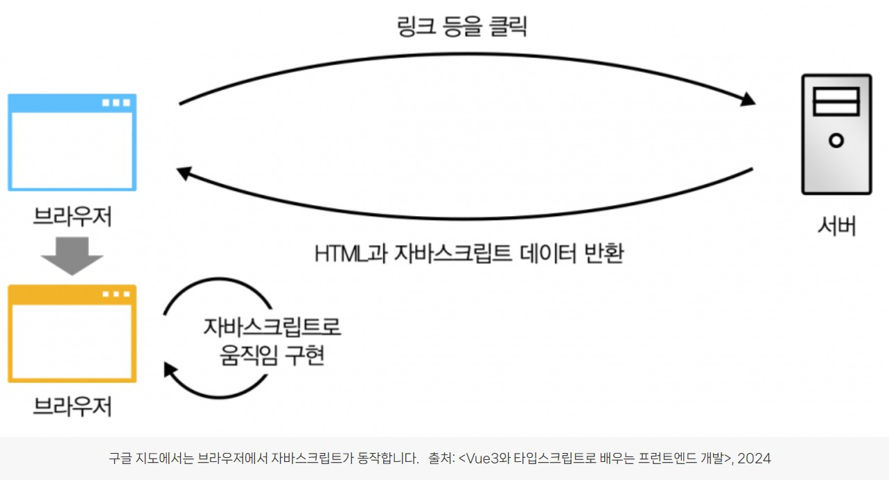
- 당시 구글은 서버에서 반환된 HTML 데이터를 읽어들인 후 지도 확장이나 축소, 슬라이드 등의 동작을 브라우저에서 구현하고자 함
-
각 브라우저는 자바스크립트를 구동하기 위한 엔진을 갖고 있으며 이를 자바스크립트 가상 머신이라 함
- Chrom, Opera(V8), FireFox(SpiderMonky), IE(Triden 및 Chakar), Microsoft Edge(ChakraCore), Safari(Nitro 및 SquirrelFish)
-
국제 정보통신표준화기구(ECMA, European Computer Manufacturers Association)는 1996년부터 자바스크립트 표준화를 시작
- 각 브라우저 개발사들의 자바스크립트 엔진이 다르고 그에 따른 사용자들의 크로스 브라우징 이슈와 자바스크립트의 파편화를 방지 목적
-
ECMAScript(또는 ES)는 ECMA에 의해 표준화된 범용 프로그래밍 언어로 서로 다른 웹 브라우저들에서 웹 페이지의 상호운용성을 보장하기 위한 자바스크립트 표준
- ECMAScript는 스크립팅 언어를 어떻게 만들어야 하는지를 설명하는 일종의 설명서이고, 자바스크립트는 ECMAScript의 사양을 바탕으로 만들어진 언어
-
-
자바스크립트로 할 수 있는 일
-
Native React라는 프레임워크를 통하여 HTML, CSS, JS 만으로 웹 어플리케이션, 안드로이드 어플리케이션, ISO 어플리케이션을 한 방에 작성 가능
-
three.js 라이브러리를 통해 3D 게임, 애니메이션 등을 제작하고, 데이터 시각화도 가능
- three.js 사이트(http://threejs.org)에서 확인
-
Electron으로 데스크톱 개발이 가능하고, 윈도우, 맥, 리눅스까지 지원
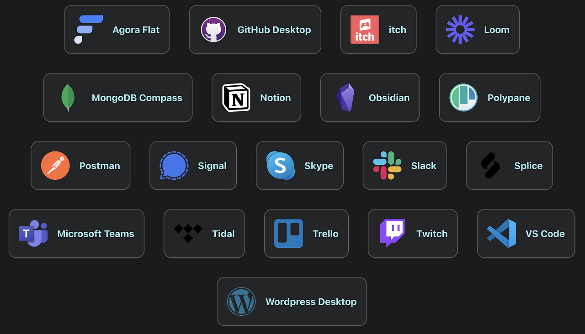
-
TensorflowJS, BrainJS 등의 라이브러리를 활용하면 적은 파라미터로도 충분한 성능을 보여줄 수 있는 머신러닝 신경망을 학습하고 학습된 모델을 실행시켜 볼 수 있음
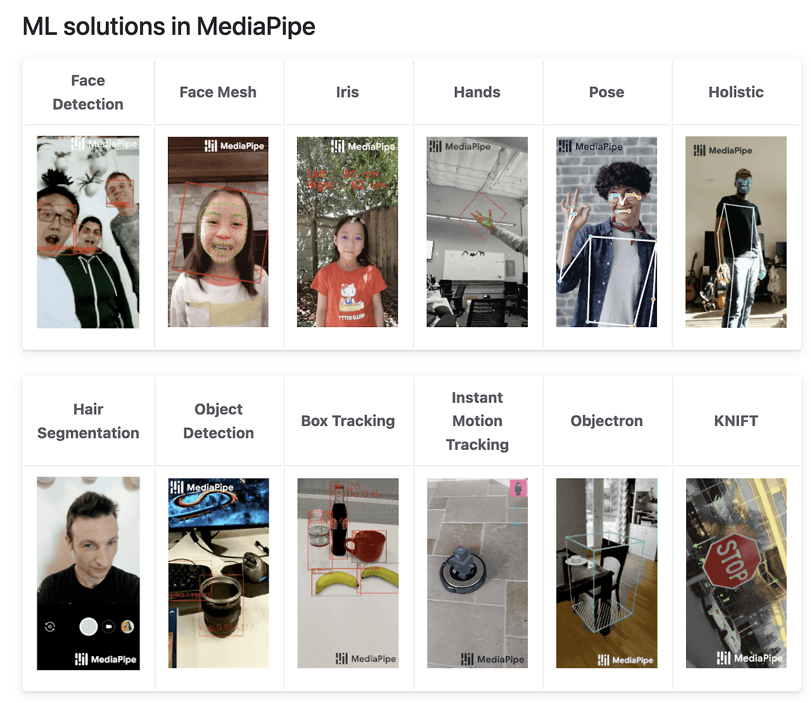
-
3. 자바스크립트 기초 문법
-
자바스크립트 선언문
-
선언문은 자바스크립트 코드를 작성할 영역을 선언하는 것
-
<script>태그로 선언문이 시작된 곳부터</script>태그로 종료된 곳까지가 스크립트 영역 -
<head>태그 영역 또는<body>태그 영역에 선언- 대부분
<head>태그 영역에 작성
- 대부분
-
선언문 안에 코드가 아닌 설명글을 넣고 싶을 때는 주석 처리
- 한 줄 주석일 경우: ’//한줄 설명글’로 작성
- 여러 줄 주석일 경우: ’/* 여러 줄 설명글 */’로 작성
HTML 코드 보기/숨기기(클릭)
/* head 영역에 작성 */ <head> <script> document.write("환영합니다"); </script> </head>
-
-
내부 스크립트 외부로 분리하기
-
프로젝트 관리를 원활하게 하기 위해서 HTML 내부에 작성된 자바스크립트 소스를 외부로 분리
HTML 코드 보기/숨기기(클릭)
/* head 영역에 작성 */ <head> <script src="script.js"></scipt> </head>JS 코드 보기/숨기기(클릭)
/* script라는 이름의 자바스크립트 파일을 생성 후 작성 */ document.write("환영합니다");
-
-
코드 입력 시 주의사항
-
대소문자를 구분하여 작성
- 잘못된 예:
document.Write("환영합니다"); - 올바른 예:
document.write("환영합니다");
- 잘못된 예:
-
코드를 한 줄 작성한 후에는 세미콜론(;)을 작성
- 잘못된 예:
document.write("환영합니다") - 올바른 예:
document.write("환영합니다");
- 잘못된 예:
-
한 줄에 한 문장만 작성하는 것이 가독성을 위해 좋음
- 권장하지 않음:
document.write("여러분"); document.write("환영합니다"); - 권장함:
document.write("여러분");
document.write("환영합니다");
- 권장하지 않음:
-
문자형 데이터를 작성할 때는 큰따옴표와 작은따옴표의 겹침 오류를 주의
- 잘못된 예:
document.write("환영 "매우 환영"합니다"); - 올바른 예:
document.write('환영 "매우 환영"합니다');
- 잘못된 예:
-
중괄호 또는 소괄호의 짝이 맞아야 함
- 잘못된 예:
document.write("환영합니다"; - 올바른 예:
document.write("환영합니다");
- 잘못된 예:
-
4. 실습 환경
-
Visual Studio Code
-
웹 문서 내에서의 자바스크립트 구동 방식을 이해하기 위해 기본적으로는 Visual Studio Code를 활용하여 실습 진행
- 자바스크립트는 내부 스크립트를 외부로 분리하여 선언하는 방식 사용
-
간단한 코드 입력은 구글 크롬의 개발자 도구 활용
- 크롬 브라우저에서 F12 버튼(또는 단축키 Ctrl + Shift + i)을 눌러 개발자 도구 실행
- Elements: HTML 요소에 적용된 스타일(CSS)을 검사
- Console: 자바스크립트 오류 체크 및 디버깅(debugging)
- Source: 브라우저가 자바스크립트 소스를 파싱(parsing)해 오는 과정을 보여줌

-
변수와 연산자
1. 상수와 변수
-
상수(constant)의 개념 및 선언
-
상수는 항상 같은 수라는 의미로 값에 이름을 한 번 붙이면 값을 수정할 수 없음
-
상수를 만드는 과정은 선언이라고 표현하고, const 키워드를 사용하여 선언
- 기본형:
const 이름 = 값
- 기본형:
-
상수를 만든 뒤에는 상수 이름을 사용해서 자료를 사용 가능
-
자주 발생하는 오류
- “Uncaught SyntaxError: Missing initializer in const declaration”
→ 상수는 선언할 때 반드시 값을 함께 지정 - “TypeError: Assignment to constatn variable”
→ 한 번 선언된 상수의 자료를 변경할 수 없음
예제 코드 보기/숨기기(클릭)
//Chrome 창에서 개발자도구(F12) > Console 탭 활용 실습 const pi //왜 오류가 뜰까요? const pi = 3.141592 pi pi = 3.14 //왜 오류가 뜰까요? - “Uncaught SyntaxError: Missing initializer in const declaration”
-
-
변수(variable)의 개념 및 선언
-
변수는 변하는 데이터(값)를 저장할 수 있는 메모리 공간으로 오직 한 개만 저장

-
변수를 만들 때는 let 키워드를 사용하고, 기본적인 사용 방법은 상수와 같음
- 기본형:
let 변수명 또는 let 변수명 = 값
예제 코드 보기/숨기기(클릭)
//Chrome 창에서 개발자도구(F12) > Console 탭 활용 실습 let box; box = 100; box = 30; document.write(box); - 기본형:
-
-
변수명 설정 방법
-
한글을 사용할 수 없으며, 영문과 숫자 그리고 일부 특수문자(_, $)만 사용 가능
- 잘못된 예:
let 1num = 10; - 올바른 예:
let $snum = 10;
- 잘못된 예:
-
첫 글자로 숫자를 사용할 수 없고, 예약어(document, location, window 등)를 식별자로 사용할 수 없음
- 잘못된 예:
let document = 10; - 올바른 예:
let num = 10;
- 잘못된 예:
-
변수의 의미를 알 수 있도록 일정한 표기법을 사용
-
카멜 표기법(camelCase)
- 두 번째 이후 단어의 대문자 부분이 낙타의 혹처럼 보인다고 해서 지어진 이름으로 두 번째 이후 단어의 첫 글자를 대문자로 표기
- 사용 예: newName, createLifeGame
-
파스칼 표기법(PascalCase)
- 프로그래밍 언어 파스칼에서 사용된 표기법으로 각 단어의 첫 글자를 모두 대문자로 표기
- 사용 예: NewName, CreateLifeGame
-
스네이크 표기법(snake_case)
- 모든 단어를 소문자로 표기하며, 단어 사이사이에 언더바(_)를 넣어 표기
- 사용 예: new_name, create_life_game
-
-
-
변수에 저장할 수 있는 자료형
-
문자형(string)
- 사용할 문자나 숫자를 큰따옴표 또는 작은따옴표로 감싸서 선언
-
숫자형(number)
- 단어 의미 그대로 숫자를 의미(큰따옴표로 감싸진 숫자는 숫자가 아닌 문자형 데이터)
-
논리형(boolean)
- 주로 2개의 데이터를 비교할 때 나오는 결과로 참(true)과 거짓(false)이 있음
-
null & undefined
- Null은 변수에 저장된 값이 null인 경우, undefined는 변수에 값이 등록되기 전의 기본값
-
typeof
- 지정한 데이터 또는 변수에 저장된 자료형을 알고 싶을 때 사용
-
2. 연산자(Operator)
-
연산자란?
-
빼기, 더하기, 곱하기, 나누기, 비교 등을 하는 일련의 작업을 연산작업이라 함
-
연산자는 연산을 수행하는 기호를 의미하고, 피연산자는 연산에 참여하는 변수나 상수의 값을 의미
-
-
산술연산자
- 연산을 하기 위해서는 연산 대상 데이터가 반드시 2개 있어야 함
종류 기본형 설명 + A + B 더하기 - A - B 빼기 * A * B 곱하기 / A / B 나누기 % A % B 나머지 - 연산을 하기 위해서는 연산 대상 데이터가 반드시 2개 있어야 함
-
문자 결합 연산자
-
여러 개의 문자를 하나의 문자형 데이터로 결합할 때 사용
-
더하기에 피연산자로 문자형 데이터가 한 개라도 포함되어 있으면 다른 피연산자의 데이터는 자동으로 문자형으로 형 변환
- 문자형 데이터 + 문자형 데이터 = 하나의 문자형 데이터
- 문자형 데이터 + 숫자형 데이터 = 하나의 문자형 데이터
예제 코드 보기/숨기기(클릭)
//Chrome 창에서 개발자도구(F12) > Console 탭 활용 실습 let t1 = "학교종이"; let t2 = "땡땡땡"; let t3 = 8282; let t4 = "어서 모이자"; let result result = t1 + t2 + t3 + t4; typeof(result)
-
-
대입 연산자
-
대입 연산자(
=)는 연산된 데이터를 변수에 저장할 때 사용 -
복합 대입 연산자(
-=, +=, *=, /=, %=)는 산술 연산자와 대입 연산자가 복합적으로 적용된 것
종류 설명 A = B A = B A += B A = A + B A -= B A = A - B A *= B A = A * B A /= B A = A / B A %= B A = A % B
예제 코드 보기/숨기기(클릭)
```JavaScript //Visual Studio Code에서 실습 let num1 = 10; let num2 = 3; num1 += num2; //num1 = 10 + 3 = 13 document.write(num1, "<br>"); num1 -= num2; //num1 = 13 - 3 = 10 document.write(num1, "<br>"); num1 *= num2; //num1 = 10 * 3 = 30 document.write(num1, "<br>"); num1 /= num2; //num1 = 30 / 3 = 10 document.write(num1, "<br>"); num1 %= num2; //num1 = 10 % 3 = 1 document.write(num1, "<br>"); ``` -
-
증감 연산자
-
숫자형 데이터를 1씩 증가시키는 증가 연산자(
++)와 반대로 1씩 감소시키는 감소 연산자(--)가 있음 -
피 연산자가 한 개만 필요한 단항 연산자
-
증감 연산자는 변수의 어느 위치에 오는가에 따라 결과값이 달라짐
- 기본형:
++변수, 변수++, --변수, 변수--

- 기본형:
예제 코드 보기/숨기기(클릭)
//Visual Studio Code에서 실습 let num1 = 10; let num2 = 20; let result; result = ++num1; //num1이 원래 10인데 ++가 앞에 있으므로 1을 증가시키고 result에 대입 document.write(result, "<br>"); result = num1++; //위의 결과에서 num1이 11로 바뀌고 ++가 뒤에 있으므로 바로 result에 대입 document.write(result, "<br>"); result = --num2; //num1이 원래 20인데 --가 앞에 있으므로 1을 감소시키고 result에 대입 document.write(result, "<br>"); //result 추가 복사해서 왜 그런지 살펴보기!! result = num2--; //위의 결과에서 num2가 19로 바뀌고 --가 뒤에 있으므로 바로 result에 대입 document.write(result, "<br>"); -
-
비교 연산자
- 두 데이터를 비교할 때 사용하는 연산자로 결과값은 true(참), false(거짓)로 논리형 데이터를 반환
종류 설명 비고 A > B A가 B보다 크다. A < B A가 B보다 작다. A >= B A가 B보다 크거나 같다. A <= B A가 B보다 작거나 같다. A == B A와 B는 같다. 숫자의 자료형에 상관없이 결과 반환 A != B A와 B는 다르다. 숫자의 자료형에 상관없이 결과 반환 A ===B A와 B는 같다. 반드시 표기된 숫자와 자료형이 일치해야만 결과 반환 A !==B A와 B는 다르다. 반드시 표기된 숫자와 자료형이 일치해야만 결과 반환
예제 코드 보기/숨기기(클릭)
//Visual Studio Code에서 실습 let a = 10; let b = 20; let c = 30; let d = "10"; let result; result = a > b; //10 > 20이므로 false document.write(result, "<br">); result = a < b; //10 < 20이므로 true document.write(result, "<br">); result = a <= b; //10 <= 20이므로 true document.write(result, "<br">); result = a == d; //10 == "10" 자료형 무시하므로 true document.write(result, "<br">); result = a === d; //10 == "10" 자료형 불일치로 false document.write(result, "<br">); - 두 데이터를 비교할 때 사용하는 연산자로 결과값은 true(참), false(거짓)로 논리형 데이터를 반환
-
논리 연산자
- 피 연산자가 논리형 데이터인 true, false로 결과값을 반환
종류 설명 ||or 연산자로 피 연산자 중 값이 하나라도 true가 존재하면 true로 결과값을 반환 &&and 연산자로 피 연산자 중 값이 하나라도 false가 존재하면 false로 결과값을 반환 !not 연산자로 피 연산자의 값이 true면 반대로 false로 결과값을 반환
예제 코드 보기/숨기기(클릭)
//Visual Studio Code에서 실습 let a = 10; let b = 20; let c = 30; let d = "10"; let result; result = a > b || b <= c; // false || true = true (or 연산자) document.write(result, "<br>"); result = b >= a && a < c; // true || true = true (and 연산자) document.write(result, "<br>"); result = a == d //true = true document.write(result, "<br>"); result = a !== d //false = true (not 연산자) document.write(result, "<br>"); - 피 연산자가 논리형 데이터인 true, false로 결과값을 반환
-
삼항 조건 연산자
-
연산한 결과 조건식의 만족 여부(true 또는 false)에 따라 코드를 다르게 실행하고자 할 때 사용
-
연산을 위해 피연산자가 3개 필요
- 기본형:
조건형 ? 코드 1 : 코드 2
- 기본형:
예제 코드 보기/숨기기(클릭)
//Visual Studio Code에서 실습 let a = 10; let b = 20; let result; result = a > b ? "크다" : "작다"; document.write(result); -
-
연산자 우선순위
-
여러 개의 연산자를 사용할 때 연산자의 종류에 따라 연산 시 우선 순위가 부여됨
-
( ) → 단항 연산자(–, ++, !) → 산술 연산자(+, -, *, /, %) → 비교 연산자(>, >=, <, <=, ==, ===, !==, !=) → 논리연산자(&&, ||) → 대입 연산자(=, +=, -=, *=, /=, %=)
-
-
총 정리 실습(적정 체중을 구하는 테스트기 만들기)
-
적정 체중 계산법
- 적정체중 = (본인 신장 - 100) * 0.9
-
적정 체중을 계산하면 다음과 같이 결과가 나오도록 코딩
- 신장: 180(cm)
- 체중: 74(kg)
- 적정 체중: (180 – 100) * 0.9
- 결과: 적정 체중이 숫자로 나타남
- 신장: 180(cm)
-
신장과 체중은 사용자의 신장과 체중에 따라 값이 변하므로 변수에 저장해야 함
-
신장이 바뀌면 적정 체중도 바뀌므로 변수에 저장해야 함
정답 코드 보기/숨기기(클릭)
let userHeight = 180; let userWeight = 74; let normalWeight = (userHeight - 100) * 0.9; document.write(normalWeight); -
페이지를 방문한 방문자가 질의응답 창에 자신의 신장 값을 입력하면 적정 체중을 구해주는 코드를 작성
-
질의응답 창은 방문자에게 질문을 던져 응답을 받아올 수 있는 창으로 prompt() 메서드를 사용
- 기본형: prompt(“질문”, “기본 응답”);
- prompt 매서드는 기본적으로 문자를 반환하지만 자바스크립트가 자동으로 숫자로 변환해 줌
- 가끔 자동으로 형 변환이 안되는 경우 발생하는데 이 때는 Number()로 숫자로 변환
-
질의응답 창을 이용해 방문자의 이름, 신장, 체중을 입력 받은 후 적정 평균 체중을 구함
-
적정 평균 체중의 오차는 ±5이며 계산 결과 방문자가 적정 체중인지 아닌지에 따라 화면에 다르게 출력
- 적정 체중일 경우: “000님은 적정 체중입니다”
- 적정 체중이 아닐 경우: “000님은 적정 체중이 아닙니다”
코드 보기/숨기기(클릭)
let userName = prompt("당신의 이름은?", ""); let userHeight = prompt("당신의 신장은?", "0"); let userWeight = prompt("당신의 체중은?", "0"); <!-- 주의사항 산술연산자 빼기 입력 시 오류가 나면 숫자키패드에서 입력 --> let normalWeight = (userHeight – 100) * 0.9; let rangeNormal let result rangeNormal = userWeight >= normalWeight - 5 && userWeight <= normalWeight + 5; result = result ? "적정 체중입니다." : "적정 체중이 아닙니다."; document.write(userName + "님은" + " " + result);
-
박국토의 하루 지출 내역이 다음과 같다고 할 때, 하루 지출 비용의 합계를 구한 후 적정 지출 비용의 초과 여부를 출력해 봅시다.
- 박국토의 하루 지출 내용은 교통비 3,000원, 식비 8,000원, 음료비 6,000원입니다. 삼항 조건 연산자를 사용하여 하루 적정 지출 비용인 1만 원을 초과했을 경우에는 “000원 초과“라고 출력하고, 아닐 경우에는 “돈 관리 참 잘했어요!“라고 출력해 봅시다.
- 박국토의 하루 지출 내용은 교통비 3,000원, 식비 8,000원, 음료비 6,000원입니다. 삼항 조건 연산자를 사용하여 하루 적정 지출 비용인 1만 원을 초과했을 경우에는 “000원 초과“라고 출력하고, 아닐 경우에는 “돈 관리 참 잘했어요!“라고 출력해 봅시다.
정답 코드 보기/숨기기(클릭)
let traffic = 3000; let food = 8000; let drink = 6000; let result = traffic + food + drink; result = result > 10000? result-10000 + "원 초과" : "돈 관리 참 잘했어요!"; document.write(result); -
제어문
1. 제어문이란?
-
프로그램의 흐름을 제어할 수 있도록 도와주는 문장
-
조건문(if문 / else문 / else if문)
- 조건에 따라 특정 코드를 실행
-
선택문(switch문)
- 일치하는 경우의 값이 있을 경우에만 특정 코드를 실행
-
반복문(while문 / for문)
- 코드를 지정한 횟수만큼 반복해서 실행
-
2. 조건문
-
if문
-
조건식의 값이 참(true)인지 거짓(false)인지에 따라 자바스크립트 코드를 제어
-
if문은 조건식을 만족할 경우에만 코드를 실행

예제 코드 보기/숨기기(클릭)
let num = 10; if(num < 500){ document.write("hello"); }
-
방문자로부터 걸음 수를 입력 받고, 걸음 수가 10,000보 이상일 경우에만 결과를 출력하도록 작성해 봅시다.
- 방문자 걸음 수를 입력 받기 위해 prompt() 메서드 사용
- 10,000보 이상일 경우 “매우 좋은 습관을 지니고 계시는군요!!” 출력
정답 코드 보기/숨기기(클릭)
let walkAccount = prompt("당신의 하루 걷는 양은 몇 보인가요?", "0"); if(walkAccount >= 10000){ document.write("매우 좋은 습관을 지니고 계시는군요!!"); }
-
방문자로부터 하루 통화량을 입력 받고, 60분 이상일 경우에만 결과를 출력하도록 작성해 봅시다.
- 방문자 하루 통화량을 입력 받기 위해 prompt() 메서드 사용
- 60분 이상일 경우 “많이 사용하는 편이네요” 출력
정답 코드 보기/숨기기(클릭)
let callTime = prompt("당신의 하루 통화량은 얼마인가요?", "0"); if(callTime >= 60){ document.write("많이 사용하는 편이네요!!"); }
-
-
else문
-
조건식을 만족할 경우(true)와 만족하지 않을 경우(false)에 따라 실행되는 코드가 달라짐

예제 코드 보기/숨기기(클릭)
let age = prompt("나이를 입력하세요"); if(age >= 20){ document.write("성인입니다"); } else{ document.write("미성년자입니다"); }
-
방문자에게 질의응답 창으로 좋아하는 숫자를 입력 받고 입력된 값이 짝수인지, 홀수인지에 따라 출력되는 결과가 다르게 나타나도록 작성해 봅시다.
정답 코드 보기/숨기기(클릭)
let num = prompt("당신이 좋아하는 숫자를 입력하세요"); if(num % 2 == 0){ document.write("당신이 좋아하는 숫자는 짝수입니다"); } else{ document.write("당신이 좋아하는 숫자는 홀수입니다"); }
-
웹 페이지에서 회원 탈퇴 여부를 묻는 확인/취소 창이 나타나게 나고, else 조건문으로 사용자가 [확인] 버튼을 눌렀을 때와 [취소] 버튼을 눌렀을 때 결과 화면이 다르게 나타나도록 작성해 봅시다.
- confirm() 메서드는 확인과 취소 버튼을 가지는 메시지 상자로 [확인] 버튼을 누르면 true를 반환하고, [취소] 버튼을 누르면 false를 반환
- 기본형:
confirm("질문내용");
- 기본형:
정답 코드 보기/숨기기(클릭)
let result = confirm("정말로 회원을 탈퇴하시겠습니다?"); if(result){ document.write("탈퇴 처리되었습니다"); } else{ document.write("탈퇴 취소되었습니다"); } - confirm() 메서드는 확인과 취소 버튼을 가지는 메시지 상자로 [확인] 버튼을 누르면 true를 반환하고, [취소] 버튼을 누르면 false를 반환
-
-
else if문
-
두 가지 이상의 조건식과 정해 놓은 조건을 만족하지 않았을 때 실행되는 코드

예제 코드 보기/숨기기(클릭)
let score = prompt("점수를 입력하세요"); if(score >= 90){ document.write("A등급 입니다"); } else if(score >= 80) { document.write("B등급 입니다"); } else if(score >= 70) { document.write("C등급 입니다"); } else{ document.write("D등급 입니다"); }
-
방문자에게 현재 몇 월인지를 입력 받고 입력된 월에 해당되는 계절이 출력되도록 작성해 봅시다.
- 봄(3 ~ 5월): “봄!! 벗꽃보러 가요!!” 라는 메세지 출력
- 여름(6 ~ 8월): “여름!! 떠나요~ 둘이서!!” 라는 메세지 출력
- 가을(9 ~ 11월): “가을!! 식욕 대폭발!!” 라는 메시지 출력
- 겨울(12 ~ 2월): “겨울!! 나는 눈의 여왕!!” 라는 메세지 출력
정답 코드 보기/숨기기(클릭)
let mon = prompt("현재는 몇 월입니까?", ""); if (mon >= 3 && mon <= 5){ document.write("봄!! 벗꽃보러 가요!!"); } else if (mon >= 6 && mon <= 8){ document.write("여름!! 떠나요~ 둘이서!!"); } else if (mon >= 9 && mon <= 11){ document.write("가을!! 식욕 대폭발!!"); } else { document.write("겨울!! 나는 눈의 여왕!!"); }
-
방문자에게 현재 몇 시인지를 입력 받고 입력된 시간에 맞게 메세지가 출력되도록 작성해 봅시다.
- 아침(7 ~ 8시): “아침 먹을 시간이에요.” 라는 메세지 출력
- 점심(12 ~ 13시): “점심 먹을 시간이에요” 라는 메세지 출력
- 저녁(18 ~ 20시): “저녁 먹을 시간이에요” 라는 메시지 출력
- 아침, 점심, 저녁 시간이 아니면 “오늘도 고생하셨어요” 라는 메세지 출력
정답 코드 보기/숨기기(클릭)
let time = prompt("현재는 몇 시입니까?", ""); if (time >= 7 && time <= 8){ document.write("아침 먹을 시간이에요"); } else if (time >= 12 && time <= 13){ document.write("점심 먹을 시간이에요"); } else if (time >= 18 && time <= 20){ document.write("저녁 먹을 시간이에요"); } else { document.write("오늘도 고생하셨어요"); }
-
3. 반복문
-
for문
-
조건식을 만족할 때까지 특정 코드를 반복하여 실행

예제 코드 보기/숨기기(클릭)
for(i = 1; i <= 10; i++){ document.write("안녕하세요" + i, "<br>"); }
-
while문과 사용 방법은 같지만 while문보다 사용하기 편해 사용 빈도가 높은 편임
예제 코드 보기/숨기기(클릭)
let i = 1; while(i <= 10){ document.write("안녕하세요" + i, "<br>"); i++; }
-
방문자가 입력한 횟수만큼 경고창을 띄우는 예제를 만들어 봅시다.
alert()메서드는 경고창을 띄우고 데이터를 보여줌
예제 코드 보기/숨기기(클릭)
const count = prompt("경고창을 몇 번 띄울까요?", ""); for(let i = 1; i <= count; i++){ alert(i + "번째 메세지입니다!"); }
-
방문자로부터 구구단의 단수를 입력 받아 화면에 구구단을 출력하도록 작성해 붑시다.
예제 코드 보기/숨기기(클릭)
let num = prompt("출력할 구구단 단수를 입력하세요", "1"); let i = 1; document.write("for문을 이용한 출력", "<br>"); for(i = 1; i < 10; i++){ document.write(num + "*" + i + "=" + (num * i) + "<br>"); }
-
함수
1. 함수의 기본 형태
-
함수의 개념
-
함수는 코드의 집합을 나타내는 자료형으로 함수를 사용하는 것을 함수 호출이라 표현
- 매개변수: 함수를 호출할 때 괄호 내부에 입력되는 여러 가지 자료
- 리턴값: 함수를 호출해서 최종적으로 나오는 결과

-
함수를 사용하면 좋은 점
- 반복되는 코드를 한 번만 정의해 놓고 필요할 때마다 호출하므로 반복 작업을 피할 수 있음
- 긴 프로그램을 기능별로 나눠 여러 함수로 나누어 작성하면 모듈화로 전체 코드의 가독성이 좋아짐
- 기능별(함수별)로 수정이 가능하므로 유지보수가 쉬움
-
-
기본 함수 정의문
-
함수를 사용하여 코드를 저장한 것을 함수 정의문이라 함
- 기본형:
function 함수명( ){
자바스크립트 코드;
}
- 기본형:
-
함수 정의문({ }) 안에 작성된 코드는 메모리에 할당되어 대기하고 있다가 함수가 호출되면 실행
- 기본형:
함수명( ); 또는 참조 변수( );
예제 코드 보기/숨기기(클릭)
function myFunc(){ document.write("hello", "<br>"); } myFunc(); myFunc(); myFunc(); - 기본형:
-
-
매개변수가 있는 함수 정의문
-
매개변수가 있는 함수 정의문은 함수를 호출할 때 전달하고자 하는 값을 입력하여 호출 가능
- 기본형:
function 함수명(매개변수1, 매개변수 2, …, 매개변수 n) {
자바스크립트 코드;
}
함수명(데이터1, 데이터2, …, 데이터n);

예제 코드 보기/숨기기(클릭)
function myFunc(name, belong){ document.write("안녕하세요. " + name + "입니다.", "<br>"); document.write("저는 " + belong + " 소속입니다.", "<br><br>"); } myFunc("박소영", "국토정보교육원"); myFunc("김국토", "공주지사"); - 기본형:
-
예제 코드에서 사용자의 이름과 소속을 질의응답 창을 통해 입력받고, 입력받은 값으로 함수가 실행되도록 수정해 봅시다.
예제 코드 보기/숨기기(클릭)
let name = prompt("당신의 이름은?"); let belong = prompt("당신의 소속은?"); function myFunc(name, belong){ document.write("안녕하세요. " + name + "입니다.", "<br>"); document.write("저는 " + belong + " 소속입니다.", "<br><br>"); } myFunc(name, belong); -
질의응답 창을 통해 방문자의 아이디를 입력받고, 아이디가 올바른 경우와 올바르지 않은 경우 아래 문구를 화면에 띄우도록 코드를 작성해 봅시다.
- 올바른 아이디: webProgramming
- 올바른 경우: 아이디님 방문을 환영합니다!
- 올바르지 않은 경우: 잘못된 아이디입니다!
예제 코드 보기/숨기기(클릭)
let rightId = "webProgramming"; let promptId = prompt("ID는 무엇입니까?"); function myFunc(promptId){ if (promptId == rightId) { document.write(promptId + "님 방문을 환영합니다!"); } else{ document.write("잘못된 아이디입니다!"); } } myFunc(promptId);
-
객체
1. 브라우저 객체 모델
-
객체의 개념
-
자바스크립트는 객체(Object) 기반 언어로 객체는 기능과 속성을 가지고 있음
- 기본형:
객체.메서드();
객체.속성; 또는 객체.속성 = 값;
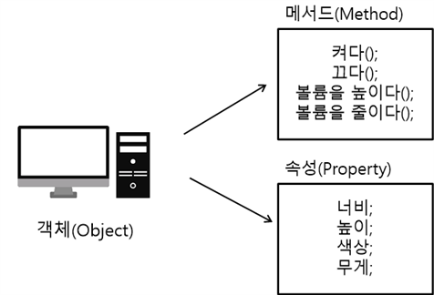
- 기본형:
-
-
객체의 종류
-
내장객체
- 자바스크립트 엔진에 내장되어 있어 필요한 경우에 생성해서 사용 가능
(예: 문자(String), 날짜(Date), 배열(Array), 수학(Math) 객체 등)
- 자바스크립트 엔진에 내장되어 있어 필요한 경우에 생성해서 사용 가능
-
브라우저 객체 모델(Browser Object Model)
- 브라우저에 계층 구조로 내장되어 있는 객체
(예: window, screen, location, history, navigation 객체 등)
- 브라우저에 계층 구조로 내장되어 있는 객체
-
문서 객체 모델(Document Object Model)
- HTML 문서 구조를 객체로 표현한 것
(예: open, prompt, confirm, alert 객체 등)
- HTML 문서 구조를 객체로 표현한 것
-
2. 문서 객체 모델
-
DOM tree의 구조
-
브라우저가 이해할 수 있는 형태로 HTML 문서를 모델로 구성하여 메모리에 생성되는데, 이때 모델은 객체의 트리로 구성
-
하나의 최상위 노드(node)에서 다른 자식 노드들이 뻗어나가는 구조로 트리(나무가지) 자료 구조라 함
-
문서노드(document node):DOM tree에 접근하기 위한 시작점으로 최상위에 존재
-
요소 노드(element node):
<html>,<body>,<div>등 html의 요소를 표현 -
어트리뷰트 노드(attribute node): HTML 요소의 attribute로 HTML 요소의 자식이 아닌 일부
-
텍스트 노드(text node): DOM tree의 최하단에 있는 노드로 텍스트로 표현된 요소 노드의 자식 요소
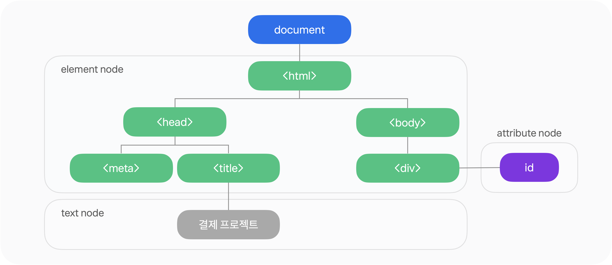
-
-
HTML의 모든 요소와 요소의 attribute, text 등을 각각의 객체로 만들고, 이들 관계를 부자 관계로 표현
<body>는<html>의 자식 노드(child node),<head>와 형제 노드(sibling node),<a>태그의 부모 노드(parent node)
-
-
DOM 요소 접근
-
getElementById( )메서드-
HTML 문서 내에서 주어진 문자열과 값이 일치하는 id 속성의 값을 가진 요소 객체를 반환
-
id 속성의 값은 HTML에서 고유하고 유일해야 하기 때문에 이 함수를 사용해서 요소를 빠르게 찾을 때 유용
-
-
getElementById( ).value메서드-
getElementById로 반환된 객체에 입력된 실제 값을 반환
-
getElementById( )는 요소의 속성이나 스타일을 변경할 때,getElementById( ).value는 input/textarea 등의 입력 데이터를 가져오거나 넣을 때 사용
-
-
<input>으로 다음 그림과 같이 나타나도록 HTML 태그를 작성하고, 이름 란에 방문자가 이름을 입력하고 인사하기 버튼을 클릭하면 입력한 값을 가져와서 메세지를 출력해 봅시다.
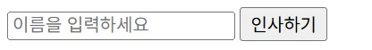
-
출력 메세지: 이름님 환영합니다.
-
isNaN( )함수: 어떤 값이 NaN(Not a Number)인지를 판별하는 함수로 앞에 느낌표(!)를 붙이면 논리값이 반대로 뒤집힘
예제 코드 보기/숨기기(클릭)
<!-- HTML 코드를 먼저 삽입해 주세요. --> <input type="text" id="userName" placeholder="이름을 입력하세요"> <input type="button" value="인사하기" onclick="sayHello()">function sayHello() { let name = document.getElementById('userName').value; if (!isNaN(name)) { alert("이름을 입력해 주세요!"); } else { alert(name + "님 환영합니다."); } } -
-
최종정리 실습(핵심만)
1. 자바스크립트 정리
1-1. 자바스크립트 기초 문법
-
프로젝트의 원활한 관리를 위해 HTML 내부에 작성된 자바스크립트 소스를 외부로 분리
-
코드 작성시 대소문자 구분, 작성 후 세미콜론, 문자형은 따옴표
예제 코드 보기/숨기기(클릭)
document.write("1");
1-2. 변수와 상수
-
상수는 항상 같은 수로 const로 선언, 변수는 변하는 수로 let으로 선언
-
연산자는 산술, 문자결합, 대입, 증감, 비교, 논리, 삼항조건 연산자 등이 있음
예제 코드 보기/숨기기(클릭)
let a = 1; const a = 1; document.write(a); "가" + "나" 1 === "1" 1 != "1" 1 <= 2 && 3 < 5 1 <= 2 || 3 > 5 l >= 5 ? "참" : "거짓";
1-3. 제어문
-
제어문은 프로그램의 흐름을 제어할 수 있도록 도와주는 문장
-
조건문(if / else / else if), 선택문(switch), 반복문(while / for)이 있음
예제 코드 보기/숨기기(클릭)
let a = 1 let b = 2 let c = 3 document.write(a + "<br>"); document.write(b + "<br>"); document.write(c + "<br>"); if(a <= 2){ document.write("hello"); } else{ document.write("bye"); } for(a = 1; a <= 3; a++){ document.write(a + "<br>"); }
1-4. 함수 및 객체
-
함수는 코드의 집합을 나타내는 자료형
-
자바스크립트는 객체기반 언어로 기능과 속성을 가지고 있음
-
DOM에서
getElementById().value메서드는 반환된 객체에 입력된 실제 값을 반환예제 코드 보기/숨기기(클릭)
<!-- HTML 코드 삽입 --> <input type="text" id="danSu" placeholder="생성할 구구단 단수를 입력"> <input type="button" value="구구단생성" onclick="guguDan()">/* 자바스크립트 코드 삽입 */ function guguDan(){ let danSu = document.getElementById('danSu').value; for(guGu = 1; guGu < 10; guGu++){ document.write(danSu + "*" + guGu + "=" + (danSu * guGu) + "<br>"); } }
2. 웹 프로그래밍 과정 평가 페이지 수정
2.1. 등록하기 버튼 수정
-
등록하기 버튼을 클릭하면
regFunc()함수 호출정답 코드 보기/숨기기(클릭)
<!-- 자바스크립트 파일 링크 걸기 --> <script src = "script.js"></script> <!-- button 수정 --> <input type="button" value="등록하기" onclick="regFunc()">
2.2. 자바스크립트 코드 작성
-
방문자가 이름과 소속을 입력했을 때 등록하기 버튼을 클릭하면 입력한 값을 가져와서 메세지를 출력해 봅시다.
- 둘 중 하나라도 숫자가 입력되면 “이름과 소속을 한글로 입력해 주세요!“라는 메세지 출력
- 숫자가 아니면 “이름(소속)님 의견 감사합니다.“라는 메세지 출력
정답 코드 보기/숨기기(클릭)
function regFunc(){ let name = document.getElementById('name').value; let belong = document.getElementById('belong').value; if (!isNaN(name) || !isNaN(belong)) { alert("이름과 소속을 한글로 입력해 주세요!"); } else{ alert(name + "(" + belong + ")" + "님 의견 감사합니다."); } }
HTML5
HTML5
웹프로그래밍 구성 요소
HTML + JavaScript + CSS

HTML5의 뜻
- HTML의 5번째 버전. 현재는 최신 웹기술을 뜻하고 있음.
- HTML: HyperText Markup Language

HTML의 5번째 버전으로서의 특징
오디오 재생
- 웹상의 mp3, wav, ogg 파일 등 재생
<html>
<head>
</head>
<body>
<h2>오디오</h2>
<audio src="https://profkim2000.github.io/board/web_2025/media/MorningKiss.mp3" controls="true"></audio>
</body>
</html>
결과
오디오
비디오 재생
- 웹상의 동영상 파일 재생
- 유튜브는 재생 불가
<html>
<head>
</head>
<body>
<h2>비디오</h2>
<video src="https://profkim2000.github.io/board/web_2025/media/AI_drone.mp4" controls="true"></video>
</body>
</html>
결과
비디오
캔버스
- 원하는 그림을 자유롭게 그릴 수 있다.(지도, 마커 등)
<html>
<head>
<script>
function draw()
{
var canvas = document.getElementById("myCanvas");
var ctx = canvas.getContext("2d");
ctx.fillStyle = "green";
ctx.fillRect(50, 50, 150, 100); //x, y, 너비, 높이
}
</script>
</head>
<body onload="draw()">
<h2>캔버스</h2>
<canvas id="myCanvas" width="800" height="600"></canvas>
</body>
</html>
결과
캔버스
위치정보
- 현재 대략적인 위치 정보(위도, 경도) 가져오기
<html>
<head>
<script>
navigator.geolocation.getCurrentPosition( (position) => {
const lat = position.coords.latitude;
const lon = position.coords.longitude;
const accuracy = position.coords.accuracy;
console.log(`위도: ${lat}, 경도: ${lon}`);
console.log(`정확도: ${accuracy} 미터`);
});
</script>
</head>
<body>
<h2>위치</h2>
</body>
</html>
결과


인프라
웹호스팅
- 웹서버 서비스
- 내가 만든 html+자바스트립트+css를 외부 웹서버에 올려 놓는 것
- 웹호스팅 서비스를 받아야 누구나 접속해서 내가 공개한 정보를 볼 수 있다.

github.io
- 무료로도 사용 가능한 훌륭한 웹 호스팅
- 마이크로소프트 인수, 운영
- 가벼운 정적 웹 운영하기에 적합
- 처음 이용하는 사용자에겐 조금 복잡
- 내 PC의 자료를 웹서버로 전송해야 함.
- 로그인 문제
- 자료를 업로드하고 다운로드 하는 문제
- 내 PC의 자료를 웹서버로 전송해야 함.
사용법 상세 정리
https://profkim2000.github.io/blog/github/githubio
실습
위치정보 프로그램을 github.io에 올려보자: 스마트폰에서 실행하고 걸어다니며 좌표 변하는 것 확인
https://profkim2000.github.io/blog/github/githubio_tut
node.js
node.js
node.js의 필요성
-
Java Script는 원래 웹브라우저 전용 프로그래밍 언어였다. = 웹브라우저 밖에서는 전혀 실행되지 않았다
-
왜 웹브라우저에서만 사용해야 해? ⇢ 웹브라우저 없이 윈도우에서 실행되도록 해 주는 실행환경 개발
-
java script가 웹브라우저 외에서도 실행되도록 해주는 것이 node.js
node.js
- 구글 크롬 웹브라우저에서 사용하는 자바스크립트 분석기 기반
- 이제 자바스크립트 언어만 배우면 윈도우용 프로그램도 만들 수 있게 됨
- 거의 모든 분야의 앱 개발 가능
- DB 프로그램
- GIS 프로그램
- AI 프로그램
- 네트워크 프로그램(채팅, 메신저, 스트리밍 서비스 등)
node.js 설치
설치 안내: https://profkim2000.github.io/blog/devtools/node.js/install_nodejs_22.16.0
자바스크립트를 윈도우에서 실행
- 자바스크립트를 웹브라우저가 아닌 윈도우에서 실행
a = 1
b = 2
c = a + b
console.log("c = ", c)

node.js 기반 개발
node.js는 자바스크립트 개발에 혁명을 일으켰다.
-
예전
- 웹서버는 별도 프로그램 이용(tomcat 등)
- 프로그램 수정할 때마다 tomcat으로 전송해서 내용 확인
-
현재: node.js는 윈도우용 프로그램 개발 가능
- 윈도우용 웹서버 개발 가능
- 웹개발에 이 웹서버를 이용
- 실시간으로 결과를 보며 쉽게 자바스크립트 개발
-
node.js 자체를 이용하는 개발도 활발하지만,
-
대부분 자바스크립트 개발자들은 node.js의 도움을 받아 react, vite 등으로 개발
react
- 현 메타(구 페이스북)에서 개발한 웹 개발 프레임워크
- javascript 개발을 위한 최신 기술
- 컴퍼넌트 단위 개발, 전체 페이지 깜빡임없이 자료 갱신
- node.js의 도움을 받아 프로젝트 생성, 패키지 관리, 웹서버 사용
vite
- react 등 웹을 이용한 개발 최종 결과물을 만들어 내는(build) 도구
- build 할 때는 node.js를 이용하지만 build한 결과물은 node.js가 없어도 됨.
node.js 개발
powerShell

개발할 때 사용하는 CLI (Command Line Interface)
- 개발자들은 마우스 사용하는 걸 싫어한다.
- 키보드로 명령어 입력하는 걸 선호함(훨씬 빠르니까)
powerShell 실행

- 탐색기에서 빈 공간을 오른쪽 클릭하고 shift + 오른쪽 클릭
- 팝업메뉴에서 “여기에 PowerShell 창 열기” 선택
react, vite 기반 프로젝트 생성
react나 vite는 따로 설치하지 않고 node.js의 도움으로 필요할 때마다 설치


생성된 프로젝트로 이동해 관련 패키지 설치하고 실행

프로젝트가 실행되는 모습은 웹브라우저로 확인

생성된 프로젝트 실행

Sample Project
유머튜브

실습: https://profkim2000.github.io/board/webprog_2025/humortube.html
나 그거 했던가?

실습: https://profkim2000.github.io/board/webprog_2025/project01.html
react를 사용하는데 필요한 기술
react 구조(1) - jsx
return 문 안에 html 태그를 넣으면 그대로 화면에 표시된다.
기본 구조
function App() {
return (
<>
</>
)
}
export default App
간단한 예제 1
function App() {
return (
<>
안녕~
</>
)
}
export default App

간단한 예제 2
function App() {
return (
<>
<button>하하하</button>
</>
)
}
export default App

일반적인 구조
function App() {
let a = 1
let b = 2
let c = a + b
return (
<>
{ c }
</>
)
}
export default App


{c}와 c의 차이

큰 구조
function App() {
function getdate()
{
const date = new Date();
return date.toLocaleDateString('ko-KR') + ' ' + date.toLocaleTimeString('ko-KR');
}
return (
<>
<button>출/퇴근</button>
{ getdate() }
</>
)
}
export default App

리턴문 안에서 자바스크립트 실행
function App() {
function getdate()
{
const date = new Date();
return date.toLocaleDateString('ko-KR') + ' ' + date.toLocaleTimeString('ko-KR');
}
return (
<>
<button>출/퇴근</button>
{ getdate() }
</>
)
}
export default App

CSS
CSS로 가운데 정렬하기
return (
<>
<div className='center_div'>
<div>
<button>출/퇴근</button>
</div>
<div>
{getdate()}
</div>
</div>
</>
)

div
return (
<>
<div className='center_div'>
<div>
<button>출/퇴근</button>
</div>
<div>
{getdate()}
</div>
</div>
</>
)

react의 상태 관리 매커니즘
상태
- 게임에서의 상태: 플레이어의 에너지 양, 적군의 에너지 양, 남은 총알 수 등
- 이 샘플 프로젝트에서는 버튼을 누른 시간이 상태 관리의 대상임.
상태는 변수와 다른가?
let a = 1
let b= 2
let c= a +b
위와 같은 a, b, c는 상태가 아닌 그냥 변수임
변수와 상태의 다른 점
- 변수는 그냥 값 저장
- 상태는 UI와의 연계를 기반으로 한다.
상태로 관리되는 값이 변경되면 화면에 표시된 값도 바뀐다.
- d를 상태로 관리하면, d의 값이 바뀌는 순간 화면에 표시된 d의 값도 자동으로 바뀐다.
상태 관리 매커니즘 기본 사용법
import { useState } from "react"
function App() {
const [d, set_d] = useState(0)
return (
<>
{d}
</>
)
}
export default App


버튼누르면 동작하게 하기

버튼이 눌리면 내가 정해준 일을 해

-
[출/퇴근] 이라고 쓰여진 버튼을 누르면(onClick), checkTime이라는 일을 해라
-
그런데 checkTime이라는 일은 자바스크립트로 되어 있어 { } 로 묶었다.
할 일: checkTime()
import {useState} from 'react'
function App() {
const [did_time, set_did_time] = useState("")
function getdate()
{
const date = new Date();
return date.toLocaleDateString('ko-KR') + ' ' + date.toLocaleTimeString('ko-KR')
}
function checkTime()
{
let current_time = getdate()
set_did_time(current_time)
}

function App() {
const [did_time, set_did_time] = useState("")
function checkTime()
{
let current_time = getdate()
set_did_time(current_time)
}
return (
<>
<div>
<button onClick={OnGotowork}>출/퇴근</button>
</div>
<div>
{did_time}
</div>
</>
)
}
컴퍼넌트란?
정의
의미있는 기능을 하는 하나의 묶음(부품)

개발은 이렇게 컴퍼넌트를 만들고 배치하는 식으로 진행됨
개발 편의
차 잠궜나 확인하는 기능이 필요하면 컴퍼넌트 2개를 배치하면 됨.

컴퍼넌트의 사용
import DidTime from "./DidTime"
function App() {
return (
<>
<DidTime />
</>
)
}
export default App


컴퍼넌트 2개 사용
import DidTime from "./DidTime"
function App() {
return (
<>
<DidTime />
<DidTime />
</>
)
}
export default App


각각의 컴퍼넌트는 각각 따로 동작한다(각각의 컴퍼넌트는 각각 상태를 관리한다)